00:00:00开始
（之间是RICK、VINCE等人的一些普通内容对话，00：06：42开始 ）
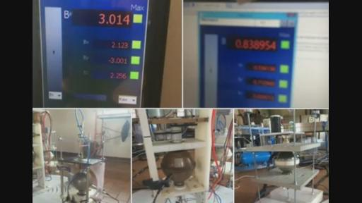
RICK:好的，VINCE,GOTOMEETING已经有几个人了？
VINCE：需要等一会儿来确认一下，GOTOMEETING包括我有6个人。
RICK：LIVESTREAM上有多少人呢？
某人：有15人。
RICK:好的，15人在那。好的，那么现在还在等第14次知识探索者交流会的开始，现在FACEBOOK上给大家放上的图片是ARMEN的，是他们在实验室当中进行的反应器图片。现在看到的数字应该是探测到的磁场。大家看到中间的反应器，黑色的东西是探测信号用的。我们可能会遇到一些问题在这次的讲座当中，还放入了一些特别好的照片。到SSI的FACEBOOK账户上找一下这张照片。我们有一些特别棒的照片，这是甘斯的反应器，就是那三张绿色的球体的照片。
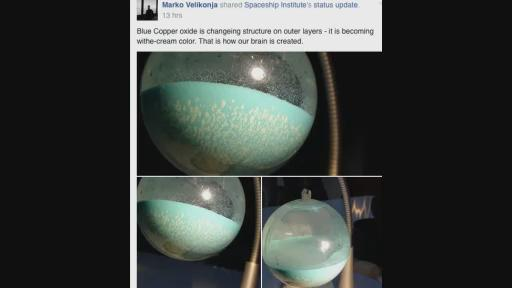
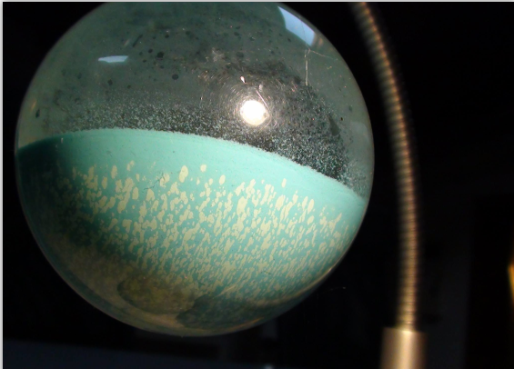（注意：照片中的最外层的蓝色甘斯变成那个了乳白色的状态，这就是我们的大脑如何创造的）现在我们好像从太空学院又划过来了，他们在试图进行连接，可能有一些困难吧。这就是他们最近释放出的照片，在13个小时前。
VINCE：不知道在看什么。
RICK：好的，你们在SKYPE
CALL上可能看不见，这个现在是在LIVESTREAM上的。但是我可以打开屏幕共享，看看你们的频道是否畅通。
VINCE：去GOTOMEETING看图像的话有点困难。
RICK：好的，但是你们可以在LIVESTREAM上观看，你也可以直接在FACEBOOK上去观看这张图片。是在一组照片中的，是1-2-2-4-8-8-9-5-4-6-1-7-7-2-2，有谁想知道这是什么吗？（笑）要不然可以直接找SSI都可以，这里面是蓝色的氧化铜，它们最外层的地方改变了结构变成了有一点乳白色的颜色，这就是我们大脑是如何被创造出来的。这是一个很有趣的概念，现在的屏幕上就是这张照片。现在有什么从LIVESTREAM上有人问什么问题吗？当我们在等待太空学院他们那边联系的时候，也许我们可以开始讨论一下。现在有一点技术。
VINCE：RICK你想把SKYPE挂断后再打进来吗？
RICK：好的。
某人：我可以来问一个问题吗？谁知道如何清理纳米涂层的铜线？
RICK：好的，好像他们现在进来了，你们好，太空学院的知识寻求者们，你们好吗？
JOHN：我们挺好的。
RICK：链接怎么样？
KESHE：能听到我们吗？
JOHN：可以的。
RICK：有点不太好，你们的麦效果怎么样？
KESHE：现在好一点了吗？
RICK：哦，好一些了。
KESHE：你得到了我的EMAIL了吗？
RICK：是最近发的嘛？
KESHE：是的。
RICK：哦，谢谢，我还没有检查呢。你们现在的网络链接不错的。我从来没有想到这一次如此的困难，这一次可以说是所有教学当中最难的一次了。我不想用13，原来凯史先生说第13次会特别难，也许应该跳过第13次，不管怎么样我们已经过去13了，现在要开始第14次了。
KESHE：明天是星期五，是13+2。（笑）
RICK：好吧。那是另外一场我们期望的了。（笑）所以不管如何，我现在可以把现场交给太空学院的知识寻求者们了，有凯史先生还有谁在那边正在笑呢？那边现在好像没有太多人。3还是4个人呢？
KESHE：有MARKO，还有ARMEN在这里，当开始之后还有YVAN和JOHN。其他人都回家了或者在做他们自己的事情，我们现在比较忙着做实验，像我们所承诺的我们要做的很多事情，然后忙着把新的学院建立起来，还有很多校园的事情，然后还需要拿到经营场所的合法执照作为教育中心。很快你就会弄伤你的手指头了（指抓飞起来的飞行器会受伤），医院就在附近。（笑）
ARMEN正在把弄着磁铁呢，所以可能我们会在下面一个星期左右的时候开始有新的学员。我们在幕后收到了很多参入学院的申请。争取引进一些意大利的科学家到基金会。因为现在我们在意大利，但是学院里还没有意大利人。所以很可能很快我们就会有意大利人加入我们的基金会了。我要把麦克风交给ARMEN让他来告诉我们。因为他跟MARKO是一直都在这里的，我上次就说到这一点，他眼睛就放光的然后就笑了。会告诉你们在过去这一周至今混合物一直发生的变化，他在这个地方的作用就好像正在创造一片失误的天地一样，无论你们想知道什么，有什么地方做错了，出问题了，ARMEN都有一些要说的，他都有过插手这些事情。（大笑）现在我把麦克交给他。
ARMEN：HELLO,大家好。现在有太多的事情正在进行着，我必须整理一下我的思路，因为我刚刚才睡醒。而且现在没有咖啡。
LUDMIL:把我们家后院的给你们行吗？
ARMEN：不不，不用的。（笑）我现在把那些照片调取出来。我昨天准备的。
VINCE：你是放在了GOOGLE云盘上面的吗？
ARMEN：你说GOOGLE云盘上吗？没有，是在SKYPE上的。
VINCE：能麻烦你放到云盘上面那样我们可以下到吗？这样我们就不会下载的时候占用你们服务器的流量了，导致你们被禁止掉了。
ARMEN：好的，我不会放很多就是放出几张照片就足够了。我现在就放上了就行了。实际上我已经把它们放到了FACEBOOK上你们可以看到了，我昨天已经给大家展示了.
RICK&VINCE：你是说那个GANS图片吗？
ARMEN:不是，我在寻找的是有关反应器组合的设置的图片。
RICK：我现在有个照片，关于反应器的。
ARMEN：不是照片。我不能在SSI的账号上展示，我也不知道为什么放不上去。
RICK：我现在把他们放到LIVESTREAM上频道，ARMEN，如果你能告诉我你指的是哪张照片的话，我可以把它放在LIVESTREAM上。
ARMEN：最后一张的。
RICK：我刚刚把它们放到了LIVESTREAM上，你是不是没睡好觉？
ARMEN：是的。
RICK：我们看到的是有2个数据显示的照片。
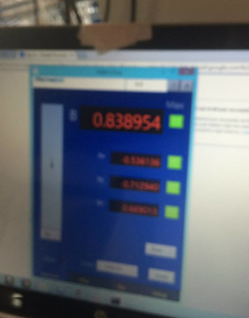
.png)
有4张照片4个不同的反应器是吗？
ARMEN：是的。需要它们组合在一起放在地上的那张。
RICK：我可以做的话我就可以把它们放在LIVESTREAM上，你可以一个个谈一下他们吗？
ARMEN：当然要了。
RICK：好的，我现在把这几张照片放好大家能够看的更清楚些。我先把其它的先弄掉。
ARMEN：好的。关掉那些省的在看的人会觉得我们这里太乱，现在又多了照片了。现在这张挺清楚的。
RICK：没关系反正反应器就是放在这里告诉人们它到底是如何组合的，可以讲一下它们的磁引力场。
ARMEN：图片是为了展示一下设置的，大家可以看到这里有2个探测器。
RICK：好的，你在说的是哪一张照片呢？是哪2个探测器呢？是21-21的呢？
ARMEN：对的。
VINCE：是21-21。还是21-16？
RICK：21-16还有电源和一些插板链接。
ARMEN：是的，你能去FACEBOOK看到。RICK你能去我的FACEBOOK看一下么？
RICK：好的。（然后几句背景交谈）还是等待一下，我先把这些照片放上去。
ARMEN：我终于找到它了。
RICK：我想这是一个让人比较迷糊的地方，现在终于找到了。我现在找到你的FACEBOOK账号了，要给大家看的是哪一张照片呢？有6张照片在你的相册里。
ARMEN：是的，我看到了。RICK。
RICK：你想展示哪个我都可以给你展示在这里。
VINCE：你同时也放到SKYPE上，这样我们可以知道你放的是哪一张。
RICK：我已经把它们都放上来了，但他要展示的那张现在在他的FACEBOOK账号上。
ARMEN：我喜欢最后的2张照片，我现在放置的是2个监视系统，监视2个反应器的，一个是中间的那个反应器。另外一个是MARKO的反应器，那个是钢球的反应器，是一个单核心的反应器，我们一直就在开着2个反应器从来没有停止过，我们慢慢的逐步往核心里面加入气体，然后所有按照正确的比例往里面注入气体，事实我们做的造成了堵塞情况的出现。我们可以第一次看到我们达到了3.014，实际上这是MARKO的，我们感到比较高兴。我们每天都在做相同的事情，进度比较缓慢，放入氮气、氢气,还有（00:27:06视频声音小有几个词听不清），然后看如何可以产生磁引力场。
RICK：这个图片看起来是3高斯吗？就是你说的在测量表上的那个？
ARMEN：是的。
RICK：是3.014,是中间的反应器。这个是两核心的吗？
ARMEN：这个是三核心的。
RICK：三核心？
ARMEN：对对。
VINCE：这个测量是从外面进行的吗？
ARMEN：是的。
RICK：那是看上去的那个靠近反应器球体的小的黑色柱子设置上的仪器吗？
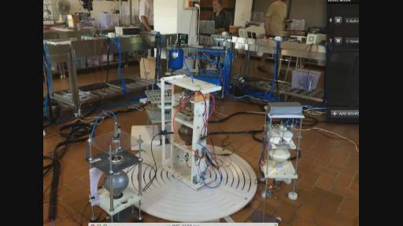
ARMEN：是的。
RICK：那是一个磁场探测器？
ARMEN：是的。
RICK：好的，我把那个放大一点，大家可以在LIVESTREAM上看得更清楚一点。现在看起来怎么样？
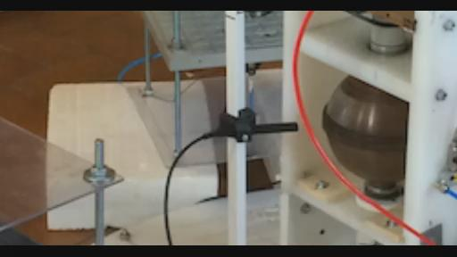
这是一个小的黑色探测器正显示在屏幕中间，这是测量磁场用的。
ARMEN：是这样的。我们现在观察到的是这个数据是一点点升上去的。当我们达到就像凯史先生所说的5、6高斯，然后我们就会看到平衡，它们所有的反应器就处于平衡的状态了。当我们达到那样的时候我们就可以飞起来了。也可以会得到其它的结果，就是说它们会产生定位，所有的反应都会处于平衡的状态之中了。也许我在其中的那一个会飞跑（笑）但是我们会把它抓回来。所以这就是现在正在进行着的事情。
VINCE：你飞跑了的话那谁把你抓回来呢？
ARMEN：什么？
VINCE：这是谁的反应器呢？包括你的反应器吗？你要飞跑了谁来把你给抓回来呢？（笑）
ARMEN：是的，MARKO会去把给我抓回来。如果MARKO飞走了，JOHN就会去把他给抓回来（笑）我们都是一个团队。
（29：50 LUDMIL的没听清楚）
ARMEN：是的，这里没有11个人，所以还没组成一个足球队（笑），这就是我们每天做的反应器，我们整天就在琢磨如何能够产生磁引力场，然后它们之间是如何相互作用的。我们在逐步试图的明白如何制造离子体，现在我们确实的明白了它确实能能给人很神奇，让人惊叹的感受。有的时候我们坐下来全神贯注的监察反应器，把你所有的感觉给反应器，你可以看到监视器，看看是否能够控制它，怎么样给反应器的磁场怎么样从反应器当中抓取这个场体，基本上更多要看你自己是处于什么样的状态，这个是可以探测到的，现在它是可以理解的情况了，慢慢的我们也就能明白了，如果大家谁有什么问题，我现在可以回答的？
RICK：ARMEN，你能帮我一下，我现在把这次链接链接的好一些了，你能够听见吗？
MARKO:你说什么？
RICK：我现在想弄清楚到底哪个反应器是谁的？是什么？你们曾经怎么样去区分这些反应器，你们给了它们一些字母，像A,B.C.D，你们还在这样做么？还是用其他的方法区分它们？
MARKO:当然了，A的是JOHN的反应器。
RICK：现在把2-1-2-1放到LIVESTREAM了，你可以用这个照片了。这样左边的这张就是陶瓷的对吗？
ARMEN：是的。
RICK：这个是JOHN的反应器？用哪个字母标记来着？
ARMEN：A反应器。
RICK：不是J吗？
ARMEN：是A，没有J标号的。
VINCE：A号应该给ARMEN嘛。
RICK：就是啊，ARMEN应该才是A,不管怎么样A是JOHN的陶瓷反应器对吧？我们现在再去看中间的反应器，把它调节到中间。是中间的吗？
ARMEN：不是。是白色的，被中间的反应器挡住了。
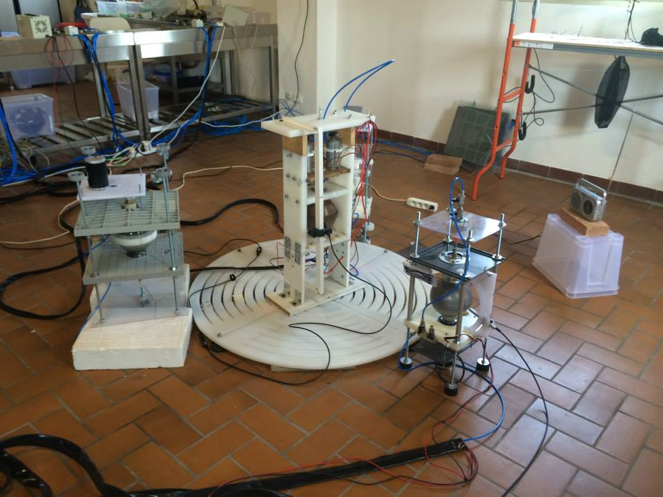
（最左侧是JOHN的陶瓷反应器A，最右侧的是MARKO的不锈钢反应器B）
RICK：噢，明白了！这里有一张更好的照片。我再弄一张照片再看一下，这个是2-1-2-2在最右边的这张。对吗？
ARMEN：让我看看是哪一个要发的，2-1-2-2，是的。
（最右侧的白色是ARMEN的反应器）
VINCE:是不是看上去和JOHN的反应器在同一高度上，还是你们的更低一点呢？
ARMEN：不是的，我们都在一个高度上，但是JOHN的反应器上下是调过来的。你懂的（大笑）
RICK：上下调过来的？
ARMEN：是的，是倒置过来的。因为JOHN的这个反应器就总是好像在吸收黄金的场体，把所有的其他3个反应器的场体能量都吸收了，他的反应器看起真是实在饿的不行了（几人大笑）
VINCE:你们把它头朝下好像就制造出了一个无线的循环？好像从南极和北极，再从北极到南极这样的循环？
ARMEN：是的。
KESHE：不是，不是的。
ARMEN：（对KESHE说：这么解释对他们来说容易懂的）你能再重复下你的问题吗？（34:21）
VINCE：所以就是这个中心的磁场出口的位置能够和JOHN的反应器底部的场体链接在一起，然后这样JOHN的反应器顶部能够和中心的反应器的磁场入口连在一起吗？
ARMEN：是的。（凯史背景里：不是的）
LUCYANO:是你们改变了南北极吗？（凯史背景里：没有）
ARMEN：没有的。我们没有调换南北极，因为我们把它头朝下的时候是顺时针的放置的。
VINCE:凯史一直在后边说不是不是（大笑）我就是问这个问题，我想这个问题没这么难吧？（笑）
MARKO：我现在给你解释一下，我给你解释一下上个星期五我们在做测试的，我们在测量这些反应器在不同位置时候的数据，首先把它们放置在地板上，你来看这些反应器都有一个南极是入口，反应器的底部是出去的场体，我们把这些反应器放在那里是可以进出进出，最后一个是指向中间的反应器，我们用磁场探测器来测量它们，然后看看它们的变化，我们这样观测发现它们在变化中，如果我们把这些反应器按照不同的位置放置的话，其中有一个情况，就是我们把JOHN的反应器头朝下放置，所以现在底部是朝向上方的。当我们放到这个位置的时候发现探测器的场体的指数就上升了。所以我们的结论就是JOHN的反应器出去的极和其他几个反应器的极是相反的。
VINCE：你的意思是现在出口的一极是在JOHN反应器的上面的吗？
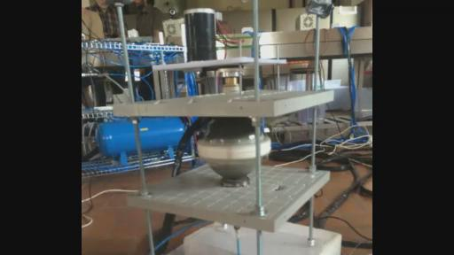
MARKO：是的。
VINCE：这样啊，这样它们和其他的反应器的电机方向是一样的吗？还是说按照相反的方向在旋转呢？
MARKO：转起来是相同的方向。因为原来的时候是顺时针的，但是我们把电机回复原来的状态，现在它是反时针旋转的，当我们改变转动的方向时候，我们也发现了场体的数值上升了。我必须要回头看一下我们的这些数据，因为数据实在太多了，有时候的我们会说忘了所有这些数据吧。
VINCE：那你们现在的工作是很繁重的吗？
MARKO：是的，我们这一周有200-300多个数据要测量在上周和这周的时候，所以想把所有数据记住是非常困难的，但是它们都被记录在笔记本上了。我们就可以回头再检查一下，当我们输入一些特殊的气体的时候就可以看到数值是什么样的，事实上，我们做的就是无论何时当我们放入了不同量的气体。我们测量了它们的场体，在任何一个改变中我们都进行了测量。我们做任何一个改变我们都会把数值测量下来。所以我们就会知道加入气体的时候会对反应器当中的等离子体的场体有怎么样的作用。你们现在正在看的是我们反应器或者反应器腔体的物理实体的方面，但是更重要的是，在反应器里面我们尝试创造等离子体，来试图明白这些等离子体的相互作用，我们试图不是去关注这些反应器的物理实体方面的东西，我们试图去明白这些等离子体的相互作用，我们往里面充入了氢气，我们试图在反应器里面把氢气转换为等离子体，用这种转换来改变场体的强度，增加等离子体的强度，这是一个非常缓慢的过程。是很消耗的时间的，但是我们必须要耐心，然后每次就一点点的加入氢气，试图把这些氢气变成等离子体，我们同时也往里面充入其他层的气体来观察这些气层是如何影响这个气体的转换过程的，看看这些气层是如何对氢气产生离子化作用的。无论何时当每次我们改变了输入了气体的量我们都会记录一下测量后的结果
。所以就像我说的我们就能够知道任何它们这些气体的不同组合对于反应器有什么样的影响。
VINCE：你们两次充气之间要等多长时间呢？就是每次充完气要等等离子体产生，我知道你们是特别耐心的等待，一般你们要等待多长时间让转化发生呢？
MARKO：有不同的时间，在这次开始的时候在上星期的时候我们做的比较多，每隔一小时一次，是的，我们现在一天也就加入2-3次，最多也就是3次了。
VINCE：但是你们现在是因为有等离子体在里面，所以你们知道里面已经有等离子体了。所以你们只是在逐步的在里面建立。你们现在知道你们在做什么，这样你们就逐步得到了更多的场体，所以这样速度就会变慢了。
MARKO：是的，我们现在正在尝试建造我们的等离子体，所以换句话说。我们在上一次网络教学中说过我们可以产生不同的元素在我们的反应器当中。是在周期表里面的元素，我们知道我们正在创造星体。每一个星体都是一个实体，有它自己的特点，是不同的等离子体，怎么说呢，这就和你注入的气体当中的等离子体的质量是有关的，一个是数量，一个是实体。
VINCE：实体变成磁场的强度。然后等离子体的数量变成实体的数量是这样吗？
MARKO：并不是强度的意思，你本来就是有了相同的场体强度了。就是我们说的主源物质的场强，在等离子体的内部，主源的场体它们总是有相同的场体强度的。但是如果你把这些相同的场强都放入到里面，就增加了等离子体。你就把好多都放在了一起，这样你就得到了一个太阳了。
VINCE：是的，就是说为什么我们的太阳要比我们的星球大数倍，而银河系的太阳就比我们的太阳要大。
MARKO：是这样的，这个这个量的大小会决定位置，会决定它和在它周围的等离子体的相互作用。
VINCE：是可以强迫它们之间作用还是自然的相互作用呢？这是自然的相互作用，就像我们的太阳系一样。如果强迫的作用的话就像我们制造的反应器，是这个样子的吗？
MARKO：是的，我们是在尝试在这些反应器的内部建立等离子体，你知道太阳是有百万年的时间来达到这个条件来建立等离子体，我们知道我们在做什么，我们想把这个过程进行加速。我们试图去创造反应器的内部条件来建立等离子体，所以我们现在在反应器内部用到了纳米涂层，然后用不同的层次的气体来创造这个条件，但是也还有其他可能的条件来应用上，可能也许有其他的应用程序，这是一个比较慢的方式。
VINCE：就好像乌龟终究还会到比赛的终点，而且还会赢了兔子的。就是龟兔赛跑的故事。（笑）
MARKO：是的，是的。事实上我们在学习。我们正在试图在明白这个。一旦当我们明白了的时候，比如现在等离子体显示出它有限的影响，我们在观察的环境，我们需要在物理可见的状态来观察到，因为我们的感觉还没有发展起来。我们不知道在背景环境中所有这些力的作用，我们只是从物质层面能看到这些东西，但是很多我们看不见的东西。还有其他的的工具之类的。这个时候我们还是对于这个（周围的场体）并不了解，没有都考虑到。肯定有一些作用，但是现在我们只能这样来移动这些反应器在正确的方向上，我们现在可以测量到这些场体的变化。所以我们现在就加入不同的气体产生不同的强度的场体，只要一点点气体就可以影响很大，对于这个场体而言。
BRAT：那收音机有什么变化么？它还在播放吗？
MARKO：啊，我们是还在用收音机，很奇怪的事情发生了，在星期一的时候收音机在唱歌，但是之后关闭没声音了，不知道什么时候又有声音了，这个可能就是等离子体的场体对它的作用。但是现在我们也不好说也许是其他的东西，ARMEN把收音机放到了不同的位置上，有一天我们会知道的。这里有个问题就是，我们必须在这里面对问题我们一定要特别有耐心，因为这些结果都是很慢才出现的，有的时候我们就试图快速的改变条件，但是没有特别耐心的看反应是如何进行的，有的时候我们改变的太快了。过一会儿，凯史先生有时候来到实验室就说为什么这么快就改变，你们必须要有耐心，必须要等待反应器有反应。
BRAT：那是不是凯史先生不在这里呢？
KESHE：我在里面的。
MARKO：哦，凯史先生是在里面做他的研究，并不是总在实验室的。他说当我们自己在这里的时候我们就自己愿意改变事情，然后改变东西。就像我们没有足够的耐心有的时候就按下了按钮，凯史先生觉得我们不该按下的按钮，我们就按下去了。
BRAT：那你们观察外面的云彩了吗？
MARKO：上个星期我们这里的天气特别好，都是大晴天没有白云的。现在有一点点云彩了，上个星期是一点都见不到的，所以我们没有看见什么，所以看不见云彩变化。
VINCE：听上去你们待的是一个好地方啊。(笑)
KESHE：是的，如果你想做饭的话确实是。（笑）
MARKO：是的，还有什么问题吗？我把麦克风交给其他人
尼古拉斯：对不起，我是新来的，我的名字是尼古拉斯。我就想问一下这些反应器是如何相互作用的呢？你们是每个人都连接到自己的反应器然后看看它们的相互作用，你们三个人都在这里然后每个人都连接上自己的反应器，然后看看你们的反应器场体之间的相互作用？
MARKO：我们是做过实验，但是你所说的对我们来说还是太早了，上个星期我们都坐在了我们的反应器前面，我们试图去供给能量，然后从反应器里往外抓取能量，所以开始了观察数据，在场体的探测器上有了一些变化。当我们抓取的时候，我的和ARMEN的都是一样的，但是给予的时候好像不太一样。我观察到当ARMEN离反应器距离近的时候有一个数值的增加，从0.7到2点几，所以当我们试图用我们的大脑来控制反应器的时候，但就像我说的这是我们才刚刚学习的第一步，我们才来了几个月，还有好多的问题，我们只是在学习，第二年的年底也许我们就会能够做这些事情了。
尼古拉斯：你们在给取的时候，是怎么给予的能量呢？
MARKO：就是把你们的一部分精神（想法、心智）给给予它。就像想法一样。
尼古拉斯：那你们是怎么做的呢?是给予什么想法呢？是说我爱你吗？还是说把我的灵魂给你呢？你是怎么样把能量投入给反应器呢？
MARKO：每个人都有自己的方法，我不能替别人说，我可以说我自己的方法，我只是在试图给反应器我拥有的，然后是这个反应器所需要的。就是这样的。
尼古拉斯：那你想给反应器所需要的，那是什么呢？
MARKO：怎么说呢，我试图不想把我自己跟这个反应器产生碰触，我并不是说物理上的，我在谈论想法，就是一个场体，而是谈论关于灵魂上的，但是我现在也不是很明白，所以我现在还没完全的明白，当我给予我的想法的时候，我把我的灵魂的场体给予了它。
尼古拉斯：那你给予的时候身体是有感觉吗？
MARKO：我感觉我的前额，在眼睛的上方。
RICK：那是第三只眼睛吗？
MARKO：是吧。我感觉那里有了跳动，当我接受的时候我不记得了。
尼古拉斯：感谢你的分享，谢谢。
MARKO：不客气。
JOHN：好的，我现在开始接下来说吧（第一次翻译截止01:01:38）
VINCE：你好，JOHN。
JOHN：大家好，我现在只是想跟大家分享一下我的理解和看法，还有一些更多关于测量数据的事情，尝试着来看看并且理解我们到底能够测量到什么，事实上我们有2个测试的东西，一个是在接近不锈钢反应器的附近，
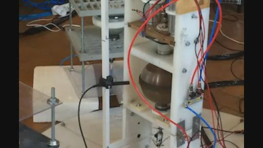
（中心反应器C）一个是靠近中心反应器的，在不锈刚反应器上我们在不同位置上装了测量装置来允许测量不同位置上的数据，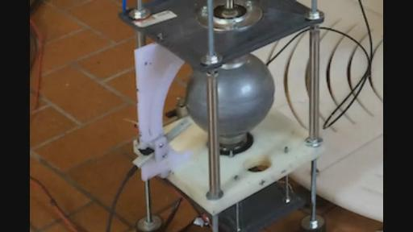
（不锈钢反应器）相对于反应器的中心，如果看图片的话，我们可以看到一个白色的塑料盘的东西，就是圆弧状的。探测头就可以上下移动但是和反应器的距离都是相等的，这就是我们的做的一部分的测试，我们测量了在不同地方的不同强度的磁场的读数。有一些轻微的不同但是差别并不大，所以我们把它移动到了同一个位置就是磁场强度比较高的的位置上，然后我们就不再移动它了。这就是关于不锈钢反应器的测量。
VINCE：你是不是事实上记录了不同的位置场体的强度？是吗？所以当测量的场体的（01:03:33某词），所以你放在了数值最高的地方，所以你现在往下移动了位置可以得到更高的数值，现在你可以设置轴承并且通过电机当中的设置来改变，或者做其他什么的，是这样吗？
JOHN：是的，我们把它固定在那主要是我们发现没有太大的区别。我们应该是已经看到了不同，但是我们还是决定放在同一个固定的位置上，待在那个位置上。我们不再往中心位置进行任何移动了，因为有一种做法的感觉就是要那样做，所以我想解释的就是现在情况的就是在固定在一个位置上进行测量，对我来说呢，位置的话是从左边到右边无论任何一个角度上来进行的测量，问题是如何看到通过旋转球体产生的场体，所以如果按照从左到右一条线的方式，事实上我们增加了到中心的反应器的距离，然后我们在一个很远的地方来核实测量以便于和那个场体协调一致，我们一条直线的从左往右，然后我们在离中心的附近得到一个最大值，然后强度从中心往左右两侧降低，通过固定了传感器的位置,我们准备进行一些测量，在一个位置上然后看在那个位置上的环境的影响，然后不再移动任何位置，它是一个具有节的霍尔传感器，所以我们已经测量了Z，那么它的方向是霍尔传感器的方向，是对外的，正对着我们的方向的，那么这个是Z轴它的传感器顶端的方向，我们还有Y轴。它实际上是从霍尔传感器，这个是Y的正值的方向，然后从传感器的左边是X的正值的方向，然后这个测量它实际上是在B场体的量级上，整个B场体给我们X,Y,Z的成分，也就是给我们整体的B场体的成分（总值），所以我们一直在这方面工作，我和MAREK一直都在着手工作着处理这些数据方面的工作，我用到了这些数据，用到了我们2天前纪录的一些数据，这个数据文件我想各位也可以收到了。事实上它是实用了所有我们纪录的数据，在一个旋转周期当中，这是我们纪录的数据，它的速率是1个千赫兹，那么也就是相当于1毫秒，会出现一个新的测量数值，你可以看到，在观察我们所获得这些数值在B轴上，这个B就是B场体，它是一个全球（局）的场体的总值，我们有这些数值的变化不同的变化，看上去很强大，这些数据还是从不锈钢材质的反应器上获取到的。它们是在我们改变白色的反应器当中的气体时获得的，所以我们可以看到一些影响通过改变在一个反应器中的气体，我们可以看到它的对场体的影响，可以被测量出来，在不锈钢材质的反应器上，在我们谈论这些数值的过程中，因为对我来说它实际上是一种更好的方式让我来理解到底发生了什么，如果你去观察这些场体你会看到一些峰值，会有一些巨大的数值出现，而且是很有周期性的一个出现，这些峰值它的最大的数值它也会有一些变化的出现，在这个峰值的强度上也是有变化的，所以我们最近一直在测量这些，为了能够保持数据有记录到这些最高的峰值，保持它以现在这种最大数值的方式，当它出现的时候保持这样一个时刻，每一次当在它当中出现这种峰值增加的时候，又发出了这些峰值的最高峰，最高的峰值的数据将会被保存，以便于能够和下面能够出现的这些峰值做比对，所以通过保留这些最高峰值，能够让我们更好的来理解我们能够看到的这种趋势，但是它却没有给予我们任何有关即刻会出现的这些数值或者说我们能够获得的平均的数值，所以从我们的文件当中获取到的数据，对我来说是有一些兴趣的，在各位所获取到的文件当中，你可以看到在时间上的不同，可以被看成有当你有了这样类似像心电图一样的，你可以看到它场体的不同的变化，它的水平轴代表事件，垂直的轴代表的是它的强度，那么除此之后呢，你会看到有一个类似像环形的图片，那么它实际上是我对场体在每一个点的上的一个计算，然后把它通过极的绘图的方式表达出来，所以我们把它给绘制出来，让各位可以以观察它的方式绘制出来，可以看到反应器的每一个旋转的周期，我们都可以看到在这个过程当中我们所获取到的场体，所以能够在某一个固定的瞬间的点位获取到这些场体的数值实际上也是非常让人感兴趣的，在一个瞬间在传感器的某个位置上获取这些数据是很有意思的，我们可以利用传感器来记录所有的这些测量在它的一个相反的位置上，在它正在修复的地方，然后同时可以看到场体的形状，然后可以看到反应器在旋转的时候的场体的形状，那么相对于其他的反应器来说它发生了，这个对我来说就是比较感兴趣的方面，可能够理解场体是如何表现的，我们能够获取的在那个水平上的场体的形状会是什么样的，做这些记录是非常耗时的工作，它的水平，但是我们现在的问题是目前来说，在某种程度上我们还没有找到一个比较折中的方式，可以即时的完成这些工作，就是说能够即刻获取我们所看到的这种图表，实际上可以让我们更好的来理解整个的事情，获取到这些数据流可以即刻向我们确认，这种极的简图式的一种矢量的绘制可以让我们有更好的理解，了解其中的某一个反应器都发生了什么，以及它会有怎么样的影响。
VINCE：JOHN，我有个问题？
BRAT：那个循环是在X、Z轴的平面上吗？
JOHN：循环是在B的场体上的，我们还可以看到相同的在X,Y,Z三个方向上的B场体的值，这样我们把它放在一个表格里再去计算，这样就可以直接算出来数字，需要时间来计算和调试，这就是为什么我们可以用这个方式系统的得到这些即将得到数据，然后在未来可以从中得到结论了。这将会是让人觉得非常有意思的地方了。另外一个因素必须要说的是，我们有一个小计算机，可以加另外一个探测器，这样的话未来测量完的数据可以进入到这个小电脑上，但是这个电脑没有记忆能力，这个计算机是一个基于WINDOW系统的，但是内存很低，所以对于另外添加上去的探测器，我们就画不出来同样的这个图表，我必须要说我们的测量实际上，因为每个探测器的探测范围都不同，如果我们把2个探测器放在一起的话，这个测量范围的不同的就会成为一个因素，这个不同会将近有4，在传感器的磁力探测棒上就会测量到，（01:15:40）
这是传感器的XX（01:15:42某词）是可以做到的。但是这不是非常重要的，因为我们看的是它的趋势，但是你要注意的就是我们所看到的这些黑色的传感器上的数据总会比白色的传感器上看到的数据，那么这个白色的传感器它的最大的一个量级就是8-10高斯状态，那么或者在800微特斯拉，另外一个传感器是为更高的场体上的，它开始会在这些数据上开始，我们所测量的这些重要的意义还有错误，错误需要去进行纠正，我们要看到它的一个趋势，看到的是在某一点上，在下一个点上的数值，在传感器上，它会只对这个传感器来说是有意义的，那么我们知道它会去做这个纠正对另外的传感器的数值进行纠正的话，那么它的意义就不大了。
BRAT：除非你可以看到它的变化。
JOHN：没错，这个就是我们想要看的一个趋势，就是在尝试看这个变化的影响，这个是最重要的。因为我们看在变化的趋势。
某人：你是在想看影响吗？一个场体影响另外一个场体？
JOHN：是的，是要看一种影响，因为我们在看场体的增加，因为我们要得到强的等离子体在系统当中。所以这是我们一直和MARKO工作的事情，这个需要很花费时间，实际上每一次都要往里面输入气体，所以是很耗时的，就好像我们在制作蛋黄酱一样，当你输入更多时候场体就会变得更强大一些。所以这就是。
VINCE：对不起，JOHN，我要问你个问题关于你的测量图，对我来说那就像一个太阳往外放射出来的射线，看起来非常不同，
。图片上面数据的测量，当然不同人有不同的理解，我想说会所它是不是也测量任何场体的逆转呢？我想问你是否看到了这些场体的逆转呢？在这些装置当中。
JOHN：你如果看这些数据的话，你会发现它有一个持续不断的变化，你去观察第一个图片，你会看到它的场体在上下的不断变化，如果你看那些数据的话，你会看到第三个数据，它会出现一些。会在0.3和0.75之间会有一个不同的变化，它是一个变化的振幅，在这个时候出现的，所以你去观察这些数值，差不多2行的数值，所以你会看到这些数据，它的B值，第一个数值在第二行的数值，因为第一行是每一列的名称，所以如果你从第二行看，第一个是名称，第一个数值B是0.746636，BX是-0.204571，BY-0.44813，是BZ是正的0.561067,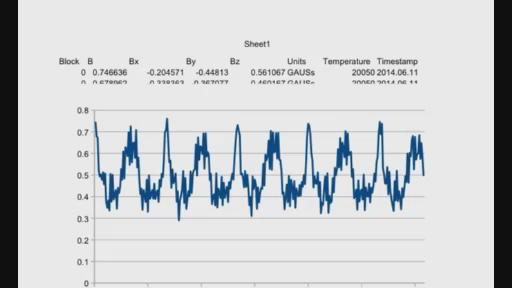
我们每秒钟有1000个这种数值，所以这些就是我们用的数据来观察这一周期，在图表中你看到的是这一周期当中的数据，这些数据实际上发生的时候会有一些峰值,而且高的峰值，在之后你会发现它会出现震荡的情况，我们用到这些峰值来定义它的周期，那么在这些周期当中的数据，从这个数据图表当中我们就衍生出第二个图标，实际上表现的角度的变化，所以这些数值它们之间是相互连接的，但是你相互看到这些数据或多或少反应了一个周期的变化，那么它的这种周期性是由于在反应器当中的形状，因为为了反应器的平衡，我们在里面放了一些比较的垫片，这些峰值是由于在传感器当中它的这对垫片的一个反应器，垫片本身是金属的，是不锈钢的垫片，会聚集更多的场体在这样一个时刻上，然后它整个的一个趋势是我们要看的，就是说它会由其他反应器影响它的变化，它的形状看上去可能是一样，但是水平却会上下变化，我们需要去理解我们所获取到的这些数据，和我们保存的这些数据，因为这些数据实际上有很大的不同，那么我保存再某一个时刻所发生的最高的数据，也是为了去观察在之后的一个时间点上是否会出现更高的数值，所以这也是一种方式去感受后面会发生什么样的趋势，所以你看到它会有不同的方式去观察会发生什么，而且这些数据实际上是非常有意思的，而且它给了我们更多的信息，就是一些即时的信息，它本身在这个时候并不是很有意义的，但是在整个趋势当中就会让我们更好的理解后面会发生什么，所以我们会发现在某一时刻它的数据在不断变化，这种变化是由于不同其他反应器的转动旋转产生的，所以我们要测量这些场体，那么有所有这些环境当中创造出来的场体，所以这些环境是我们需要观察的，
VINCE:是的。这就是一个不锈钢反应器所测量的。
JAMES：你如何来解释下面那个图形的意义呢？
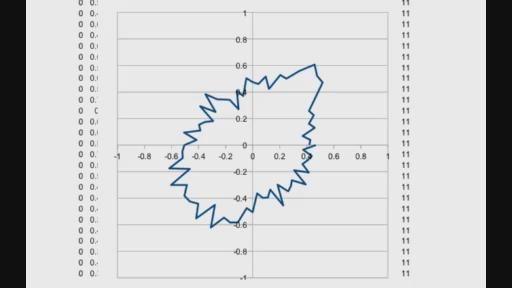
JOHN:VINCE我稍后来回答你的问题，表示底部的这个图形，那个图形实际上如果你去观察第一张图形的话，
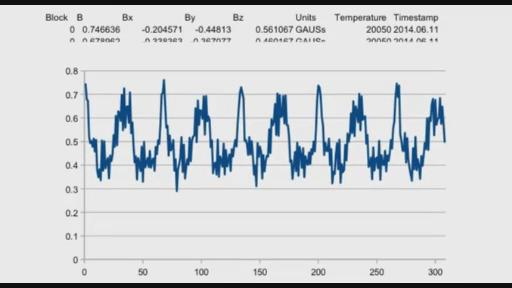
（第一张图）你会发现它会有很尖锐的峰值，第一个在开始的时候是从0开始的，第二个是0.65或者0.67，你看到那个数值了吗？
VINCE：JAMES，JOHN在和你说话呢。
JAMES：是的。
JOHN：它实际上是球体旋转一个周期的数值，在旋转过程中，传感器将会测量这些数值，看到0.75之后你可以看到它会下降到0.5之后降低到0.35，然后再提高到0.5你会看到这样一种变化，如果你把每一个旋转的时间然后和反应器的旋转角度成一个比例，这样就会制造出第二个图形。实际上是场体强度的图形，相对于反应器的位置，它就允许我们去观察事实上，每一个反应器的位置，我们测量出了不同的数值，这个图形可以不断的重复，还可以有不同的图形出现在这个一个周期上，会出现很多不同的图形，加在上面，或者下一个进来的周期它的形状会使得它的线变得非常的粗，会给其他的从这个方面来的数据，相当于任何一个点的数据，那么这些测量实际上也是由于其他的反应器给它造成的影响得到的这些数据，还有来自环境的，我们知道环境它并不是完全恒定不变的，实际上会有一个不断变化的情况，但是环境的变化它的量级是比较小的，但是其他反应器旋转的变化，由于他们在空气当中，那么场体是由等离子体制造出来的，那么他们之间会出现锁定的情况，我们会有更多的这样一个在测量上的变化，所以我们需要去观察我们要观察的是什么，在这种方式下，实际上我们要看的是整个的一个整体会发生什么，在这样一个不锈钢材质的反应器的旋转过程中，它实际上会有其他三个反应器也在旋转当中，而每一个反应器都会有它们自己的等离子体，那么每一个等离子都会制造出场体会影响到传感器，
JAMES：是的，我理解你在说什么。我想问你是是不是从上往下看反应器，来去测量反应器它整个周围的环境从上向下看的吗？
JOHN：不是的，实际上我们所观察的是不锈钢反应器中心的位置，实际上传感器本身是不动的，我们不会改变传感器的位置，我只是去观察它的场体，这种进入这些数据，从完全传感器的一个位置上观察这些数据。
JAMES：那么什么是X,Y轴？代表什么？场体的强度吗？
JOHN：你可以在第一个图中看到，代表的是时间，X轴实际上是一个量级，那么它的图形是B值的一个振幅，所以是B的全局的值。
BRAT:抱歉，我复制的这些数据是图形后面的数据，有X,Y,Z,还有B的这些数值的一个测量，我的理解是正确的吗？
JOHN:后面的数据，你可以看到它第一列的数字是块，每个块都代表1秒钟的时间，而第二列是B，是总体的B的全局数值，第二列是BX,BY,BZ，还有E,F的列，它是它的单位，你还有时间还有日期，还有一系列的数据，那么实际上这些一系列的数据它实际上都是和时间有关系的。
BRAT：所以每个数据它实际上反映了整个三维环境中的数据的变化。通过这三个轴线。
JOHN:是的，确实是这样的。而且它反应器了XYZ的变化，可以这样实现，但是你可以看到这是一个周期数的变化，实际上每秒钟会旋转15周，那么我在观察的这些数据实际上表达十五分之一秒的数据，它相当于每一个旋转周期当中所收集到的所有的数据，所以它相当于60.67的这些一个周期的数据，所以可以在XYZ上重复出现，这些图表我不是在说会给你一个趋势，针对这些数值来说，你去观察B1，为什么它总会是负的呢？如果你去观察X或者Z，你会发现它会有正负的数值，如果你去观察这些数值，它是正的或者负的，实际上你是有一种出现了场体的逆转，在等离子体本身中出现的，实际上是场体根本的逆转的，它可以从场体的方向上看到这种情况，从测量的情况上看到。
BRAT:所以每一个记录都是1秒钟的吗？我的理解是正确的吗？每一行就是在这个表格中都是1秒钟的吗？
JOHN：不，不是这样的，每一行代表的是千分之一秒的数据，就是一微秒的数据。
BRAT:哦。是一微秒，好的。
VINCE：一秒钟会有15圈的旋转。
JOHN:是的，所以你会有65-66，因为事实上对旋转来说我们并没有一个非常精确的计算，相对于反应器的旋转，所以我想应该是65-67这样的数据，就是每旋转一周出现，如果你用65X15，它就会给你整个一秒的这些数据。你现在明白了吗？
JAMES：我现在还没有理解你说的第二个图表当中的情况，你的第二个图表代表什么呢？怎么做出来的呢？
JOHN:我们用时间戳的方式来放上更多数据，它是一种计算角度的方式，所以通过使用这一切数值，它就在这里面的数据就会出现一些不同的，实际上它会有一些数值和角度，它会成为某种比例，比如你去第一个位置，你把它命名为起点，在你的67这旋转的数值上，67的旋转数值比如说是结束，如果你去看他们之间的区别的话，它就会给你一系列的数值，就相当于一个旋转周期的数据，这样的话每一次都可以计算它的角度，然后你去用正弦余弦这些函数，你只需要把一个数据放在一个点上，相对于你所测量到的角度去进行一个函数的计算，你现在明白了吗？
JAMES：还是没有完全搞懂第二个图表。第一个我非常清楚，它代表的是场体的强度，相当于B场体和时间之间的关系，那么它代表的是这样一个场体的变化的周期，因为反应器是在旋转的，但是在第二个图表中你怎么解释环形的结构，我现在有点搞不懂，无法理解它到底代表什么?
JOHN:实际上我们可以举一个例子，在大约45度角的位置上，在整个环形结构的位置上你会发现它有基本上算是一个最大值，可以相当于峰值，出现在第一个图表当中的峰值。
JAMES:哦，我明白了。
JOHN：如果你想以另外一种方式来理解它的话，我们有一些反应器它们以这种环形的方式来旋转，那么你在一个位置上来读取它的数据，你会读取到B.X，Y，Z，我用的整个B的数值，然后在这个位置角度上，就是球体的角度，我从这个传感器它放在了任何一个适当点的距离，它们之间有这样一种关系，然后我慢慢的旋转它，相当于相对于中心的距离，旋转反应器，这样我就会有一个新的测量数据，然后我用这样一个角度把它放到我们的图表上，出现了0，0的数值，我输了一个新的数值，进入了第二个角度，然后是第三个角度，然后重复同样的做法，在整个反应器周围重复这样的做法，这样就形成了我第二个图表。
VINCE:抱歉,JOHN.你刚才说的是没有变化是静态的，就是在0.7这个状态，第二幅图它就应该是一个环形的，我的理解是正确的吗？
JOHN:是的，它是一个环形的。如果说场体是完全一样的，每一个角度都和它的外界有一定影响。
JAMES：是啊，这就是我最初说的意思是一样的，就像你从反应器的上面往下看出现的情况，你会看到它周围场体的一个变化。
JOHN：你说的既对也不对。因为实际上你看的是它的场体，看到的是它的反应器是球体，但实际上我们所能够看到的影响是同时来自于全局的影响，周围的这些反应器环境都对它有影响，这是在同一个时刻发生的事情。
JAMES:是的，是的，我知道，我理解这一点。
RICK：（进来）好的，我在试图把所有人都连起来。（刚才掉线了）。带上耳麦，好的，需要把每个人链接起来，SKYPE是不是都能听到我？我们在这里听不到你们的声音了，VINCE我能听到你，你能听到我，有一些奇怪的声音情况发生了，（笑）看看我得检测一下SKYPE是不是可以了用了？
LUDMIL：VINCE，可不可以发给我那个PDF啊？拜托。
VINCE：好的。
JOHN：好的，我能听到你,LUDMIL。你已经接通了，我能听到你VINCE。
VINCE：好的。
RICK：现在看起来可以。
JOHN：所有人都被拯救回来了。（笑）
RICK：是的！有点奇怪，声音听起来没问题，没问题可以继续了吗？
VINCE：是的，没问题的。
RICK：好的，JOHN，刚才到哪了？
JOHN：我继续再说一下第二个图表，在45度角那里我们取得了一个峰值，这样和两个不锈钢垫圈协调一直，就是在通过垫圈通过探测器的时候，这就是为什么我们会有峰值，这是一种方式，这样我们能看到和检测我们在旋转的时候在什么位置。
VINCE：这个是单峰的数值，还是两个峰值的？
JOHN：这是单峰的数值，你看第二个图，如果你看45度角位置的时候，在0.06、0.06那里。这是和垫圈一致后的峰值，就是在探测器前边的位置。
VINCE：好的。
JOHN：所以你如果用这种方式来看的话，你就不会看到一些看起来非常尖锐的东西。由于设置角度的问题，探测器的垫圈在前边，但是无论怎样，很有趣的地方是通过使用这个数据，我们就能获得一些信息，就是对于那些必须要理解的情况，
对于反应器正在发生什么，关于反应器前在探测器前的角度的情况，
RICK：我有个问题，在JOHN你离开之前。
JOHN：好的。
RICK：你认为电机的影响在不在这个图上有影响，你认为它是来自于探测器的吗？
JOHN：当然它会显示出的。但是别忘记的是，磁铁影响的减少是和距离的平方有关的。我们离电机不是很近，电机是在反应器系统的最下边，在一定的距离上，用了磁铁是有些影响，但是电机主要在其内部固定了磁铁，所有的电动机和交流电机都有一个固定的磁铁，对准着旋转体，因为电机有一个屏蔽的外壳，会把内部的磁铁磁场降低很多，有一些影响，但是那个影响对于磁铁大多数时候都是恒定，并不是来自于电机的，但是电机会产生一些影响，产生一些峰值（SPIKES），但是这些在电机当中的主要场体或多或少总是在同一个方向上的，在电机当中是有换流的，会在场体当中制造一些（01:46:29某词）
，但是大多数时候这些场体基本上是在一个方向上的，成为峰值。
RICK：我们昨晚做了一些测试，用IPHONE手机的样子做了一个磁场检测器，里面用了电动机运行，我们可以得到读数，在一些更远地方的开始得到了一些非常重要的测量读数，在测量之后可以很快的明确出数据，就像你靠近中心反应器一样很快的可以得到读数。
JOHN：我们测量的时候必须要离开远一点，我们测量到了在电机上有很强的磁场，电机有150瓦，（对背景：它不是你的吗？是200瓦的吗？）我的看起来是200瓦的，但确实我这个看起来像是比150瓦要强的，这些是交流电机，（01:47:50某词）？已经足够强了。
RICK：我能不能问个其他的问题，你们有没有想做个系统就是不要带电的电机在其中的，能不能有其他种类的东西转动反应器，我也不知道什么东西，比如像钟表什么的，弹簧什么的，反正就是类似的其他的东西，可以带动转动的。
JOHN：那怎么带动它转呢？
RICK：想法是比如压缩空气，换句话说就是，使得全部的磁场离（01:48:38某词）远点，这样就非常可能的来测量反应器给出的额外的磁场，更精确，更容易量，也没有电机所引起的噪音。
KESHE：有一件我们这个星期说过的事情就是，现在用一句话来说就是你们偶然提到的这个就是，我们现在在怎么来产生等离子体和维持等离子体的方法上，从纳米涂层材料当中创造等离子体这是一个未知的现象，在基金会论坛链接上，你很偶然间提到了就是如何能够产生等离子体，如果你要去等离子体物理学家那里说，你说我用纳米材料产生了一个等离子体，他们就会笑话你，会从侧面来攻击你，这就是在如此短的一段期间和时间里在论坛里有如此激进的反对存在的原因，正是因为你发展了这项新的科技。
所以等离子体不是在那些像你看到的在物理学家的实验室里的球里面产生的，他们用转动和静电，我们产生等离子体是用这样的方法，通过用多种气体和气体之间的相互作用，或者同时我们用纳米涂层创造的的磁场压力来维持，这是一个在核物理和等离子体物理上非常、非常巨大的发展，你们在我们论坛上说产生了这个那个等离子体，但是如果你认识到正在发生了什么，在那个项目中，我们可以展望300亿美元在下一个十年里，需要这么多钱来完成这个项目，他们试图用产生一个磁场的，你称之为b包围的东西来保持住等离子体，然后需要用到很大的能量，把这个等离子体维持在里边。在一种很简单的方式当中，通过这项新技术的发展和我们展示的，你就产生了相同的磁场，只是通过这种纳米材料的层，这个科学是未知的，这个技术实际上是第一次来被讨论，在背地里好多在等离子体领域里的人在听这个，正在搓自己的头，说这些人是多么愚蠢，都不明白他们自己完成了什么。我们完全都知道这些，我们把这个技术特别顺利地来带到了世界公众的面前，他们都不知道自己一直到现在都是在用错误的方式思考这件事，花上数十亿美元的钱来产生磁场维持等离子体。这是在主要技术领域当中的一个巨大的突破，所以早晚会有人出来说，这些人不知道他们在做什么。
我非常清楚知道我在教什么，知道我在把这项科技引向那里，使得这项技术对每个人都是触手可及的，这样我们就不会按照过去的错误方式去思考了，我们不需要来仅仅谈论的我的反应器来产生等离子体和保留等离子体，但是这新的巨大的成就是什么呢？这个新的成就是现在，就像我之前给你们大家解释的那样，但是你们不明白，纳米层和空洞它们产生不同磁场强度的层，那么实际上你做了什么呢？实际上你是制造了一个不同的磁场强度的光谱，从主源物质的强度到物质和亚物质的磁场强度，所以不管你制造了怎样的反应器，我们在这里给你们一遍遍地展示，我们可以提取所有的物质所具有的等离子体，即使知识寻求者也没完全的明白在发生什么。在核里边所具有的全部的等离子体，是完全取决于你放在反应器内壁周围的纳米涂层材料，或者通过我们放在反应器内部的鞘来保留住所有的磁铁的场体强度
。换句话说，你可以通过放个笼子在里面保持这个球体。或者你在在场体的末端可以放入一个拉紧的磁场的环把它控制在里边，在那些我们没有做纳米涂层的反应器里面，我放了个鞘在中间的位置，我们收紧了离子体，但是气层本身对是由于相互之间的吸引，来使气体转化为等离子体，在其他的情况下，在比如外边也是有完全纳米涂层的，我们封闭等离子体是通过把等离子体完全的关在了里面来实现这一点的，我们用这种方法产生了等离子体，同时维持等离子体在等离子体科技界一项非常巨大的根本性的突破，换句话说，通过不产生能量的方式，我们所有的电机，我们的反应器所有的这一些，不管怎样都没有电子性的连接。它们是通过外部的电机来旋转的，甚至是通过皮带带动，我们没有任何导电的材料来连接反应器，所以当你做这个的时候，你就制造了条件。
在这种情况下，我昨天跟JOHN还解释了，还有其他的知识寻求者，你现在在这种情况下，从空气里产生了等离子体，这就是在宇宙里边等离子体是怎么样产生的，现在我们可以通过不同强度的反应器之间的运动和相互作用，我们可以让这些等离子体产生运动，这些要知识寻求者明白的，以后你们会越来越清晰的明白正在发生着什么，就像我昨天和前天对JOHN说的，一旦等离子体在反应器里产生了，并且和其他的三个反应器一起联合的过程中能够维持个体的话，这样我们就可以在这个实验室中的这4个反应器之外的环境中创造出一个等离子体，这样我们就用锤子可以把JOHN的反应器给打破，因为其他的那个几个反应器还需要我们到那里拆开才行，才能把这个拿走，实际上，我们用锤子把JOHN制作的陶瓷反应器给凿开，我们应该能够保持等离子体独立的在同一个位置上在同样的旋转速度的状态下，这不是童话故事，让我们看一下太阳吧！太阳没有容器也没有电机，等离子是由环境来支配它的位置和它的转动。然后发生了什么呢？在那个结构里的某个地方，在那个界面上就会有磁引力场转换为物质，等离子体会使自己产生一个和物质的交界面，会产生一个磁场，使他能够在物质上被我们看见，可以是甘斯，或者星球外表面一样的固体材料。或者在一个星体的表面，在表面的那些末端材料到达了维持等离子体的交界面上，在距离中心的磁引力场已经足够远的地方就会允许它的磁场的边界，也就是我们所称为固态表面出现了。实际上，我们可以接收到的氢等离子体的磁场的表面，或者在太阳表面的氦，离中心或者星体的离中心核越来越远，在表面就产生了物质的场，所以当你说我们可以没有任何东西就可以旋转的时候，在不久之后，当知识寻求者们明白了整个过程，我们会把其中的一个核心给打碎。
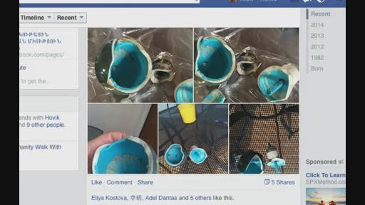
（之前打碎的JOHN的陶瓷反应器）去看和展示这个等离子体根本不需要物理的东西把它给装住，但是现在我看到这种状况，在过去两三个星期里边看到的，
就像我和知识寻求者们以如此多的方式解释的那样，由于他们自己的开放性和分享的知识，我们把知识给知识寻求者们给得太快了，他们现在是迷失了，他们完全没跟上，他们看着东西但是不知道自己在做什么，他们在争取有点什么东西他们可以掌握和看见，但是在很快的将来，可能几周，一两个月后，他们如果能抓住整个的事情，就会意识到他们才会明白教给他们的是什么，这个跟你们也一样，你看见这些图片这些反应器，他们是用电机转起来的，你有一个反应器，如果你能达到一个核的条件，这个就是一个单独的太阳系，还有其他的新的行星，在这个星系的结构中是一个完整的生命体结构，有所有的生命，它就会有一个可支配的状态，对与另外一个参考点而言。就是另外的一个双星孪生体，那里就有一个双星系统，即使你看不见孪生星体中的另外一个星体，是一个电子跟质子，当把这个向现在的科学界敞开以后，人们就会明白下一步天体物理界中绝大多数物理学家就从来没有明白的事情，甚至太阳系也是按照原子结构下的电子和质子的行为一样在运行着的，这是什么意思呢？甚至星体自己本身就有一个星系，它实际上还是一个电子，对与一个质子来说，它不光是一个孪生体其中的一个，也是一个组的一部分，当天体物理学家知道这个过程的话，这样你就明白了这个实际上就等于是指纹，所以在以后的太空旅行的时候你就知道了指纹的作用。你不仅可以从一个星球到另外一个星球上去，但是你可以去到一个行星上，就可以知道这个行星是在哪个星系里边的，相当于做为一个电子的位置，然后就可以根据这个知道中间的核心是哪个，就可以在那个等离子体结构里边旅行，你称之为的超级的太阳系，就意味着还有另外的星体比这些都大，就像电子在转动一样。不管它的内部的等离子体环境的命令是什么样子的，这就是我们学习等离子体的一个过程，但是这个学习进展太快了，但是我知道有的时候必须要以这种方式来做，因为我们对于马上要发生和发展的没有太足够的时间了。但同时，你要从整体上来看这个结构，这是什么意思呢？你在看一个读数，你看着一个点，一个旋转的情况，不是因为你看的不是中心的核，所有JOHN所展示给你看的的图片上的数据，这是一个附属的反应器的数据，这个反应器按照120度间隔的位置设置的，然后你改变了围绕在这个大白色圆盘圈上的另外一个120度上的反应器当中的气体，然后我们在这个第三个反应器里改变了气体的量，我们就看到了数字，探测器在测量的位置数据的变化，这个时候你可能忘记了，MARKO上周花了很多的时间计算校准这个测量的反应器，就是这个反应器你们所看到的数据正是因为之前的这些工作。
我们或多或少的知道，这些我们尝试着尽可能的建立更多的数据，就像你们看到的我们这里收集了15页的数据，来反映等离子体是怎么样来表现，的如果我们增加一个单位的氢气，加入一个单位的氮气等离子体是如何表现的，然后把整个反应器内部都放空，再重新装入气体，这其中没有氩气，只用氮气。所以我们有一个比较好的理解或者也可以说是大致的理解，就是通过这些数据来了解反应器的行为，但是你们看到的JOHN所展示的数据，是附属的反应器的数据是边界反应器的数据，不是主要的反应器，你们在这个称为太阳反应器中的变化，不是由于对于这个反应器发生的变化，是由于其他的另外的边界的反应器的变化引起的，在平面的另外一边的反应器里边的气体的变化，我们看到了它的影响，在中间的和其他边界的反应器都有了影响，这两个反应器我们设置的是都冲着一个方向，但是在中间的核的那个主探测器，那个是在另外的一个方向上，这个探测器JOHN设置在靠下的位置上。大概40到45度指向南极方向，但是两个探测器都是在它们自己的X轴上看从JOHN的反应器方向过来的，我们看到对场的影响，我们察觉到这些接受到的都是从JOHN这边来过来的，Z轴方向是从B反应器方向上的（第二次翻译截止02：04：49）
然后Y探测器是检测垂直方向上相对于地球的环境中磁引力场的变化。所以有两个反应器和两个探测试的这种设置方式，我们所看到的是尽可能的去观察在这个装置中，昨天我解释给我们的知识寻求者，在中心核在探测器和它的附属的内核之间的间隙，你可以在数据中看到，它实际上有差不多半米的距离。或者是60－70cm，不会再超过这样的一个距离了。但是即使在这个间隙当中，我们看到了中心反应器的检测器显示的情况就是在轴线位置上出现的这些场体，
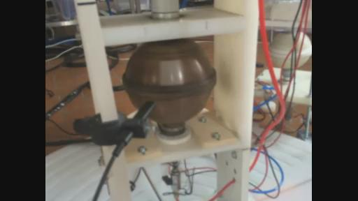
（3号反应器）而在附属的反应器上，表现出了这种排斥场体的情况，或者说它们会出现这种变化（换），有时当你非常仔细地去观察它，当它们其中的一个改变之后，过一段时间它还会再变回来，所以我们还没有完全建立起一个平衡的的等离子体环境，就是说还没有在整个四个反应器之间建立一个内部的平衡等离子体的环境。昨天我把这四个不同尺寸的环形的磁铁放在桌子上，，我试着对我们的知识寻求者解释说，在目前来说你们的反应器就象现在这样，一个大一个小一个非常非常小，这和磁引力场的强度是没有关系的，我把另外的四个相同的类似的环形结构放在它们旁边也放在桌子上的时候，然后我说，当你能够实现去平衡所有的四个反应器内核，使它能够达成现在这样一个位置就可以实现提升的时候了，这就是如果你去改变整个的位置的话，我们在这里的知识寻求者或者各位中的大部分人就可以从反应器的物理形态当中，实际上就是远离开来，也就是不太看重反应器的物理形态了。我们们需要去观察这些进入到反应器的这些场体它们之间是如何相互作用的，而且是各自如何相互影响的，我在寻找和平，正像我昨天解释的一些事情。
我作为一个核物理学家接受培训的时候，进行一个核反应器的系统控制，这样的一种方式来接受培训的，大多数时候我并不看它的一些数字，而是看它们之间的相互作用。在核反应器控制室中，你里面有上百个不同的部件，它们都在不同的运行，你实际上观察的是它们之间所显示出的这些意义，在大多数情况下数据实际上并没有直接的关系，这也是为什么大多数的核反应堆失去了控制的原因
，因为他们只是去关注某一个数据细节而却忽视了整体的把控，所以当我们进入到实验室的时候，我会去先观察一下所有的仪器的读数，然后看看它们所收集到的这些数据。我要去观察场体的探测器，还有这些电源的一个供应，那么它实际上给我留下这样的一个表现，就是说它需要我再过多久之后再回来继续观察。就好像我昨天对MARKO所说的那样，每一次我回来的时候总会发生一些事情，因为我知道这些反应器是如何制作的，我说这个反应器是JOHN做的，实际上它们也是我赋予生命的婴儿，所以我会知道它们的行为，在几天前，在他们往里面输入气体之前的一天，我对他们说我那天会回来的，当我们那天回来的时候，它应该是在3.2多一点的这个状态。从2.67或者2.68,我们达到了3.3。昨天我去观察了它的结构和数据，我说如果我们能够达到点44或点45的话，这将是非常不错的事情。但是我不认为这种情况会发生，因为在3.7的时候出现了一个峰值，知识寻求者他们看到的是数字，而我看的，因为我也向JOHN解释过，第三号反应器或者我们把它称为中心反应器，那台3号反应器，它显示出它的电流从原来大约0.3安培降低到了0.09安培的这样一种情况，就在这个时候我们出现了峰值，因此我实际上是在观察是否还会出现这个峰值，因为它们连接到，如果你在电流上出现了峰值的话，就意味着出现了比较小的压力，你不需要更多的压力，所以它意味着，每次我进来实验室的时候都会去观察发动机，去观察这个电机，所以它意味着当这些压力释放之后，它内部的磁引力场实际上是试图和地球的磁引力场相匹配，但是当你去观察这些数据，当你看这些电机的时候，每次当我进来看的时候，它是第3号电机就是反应器C的外核心的电机，它经常会变化震动在0.11到0.38或者到0.4。有的时候到0.38有时到0.4。今天早上当我回来时，我就问我们的知识寻求者是否读取了这些数据，今天早上他们间隙很显明就缩短了，我当时是早上5点钟来到实验室的，它当时在旋转时的数据是0.25到0.32这个状态，在早上的时候当我们进来时，它又回到了0.2和0.3的状态，这实际上就有一个非常明确的显示，我们的实验室它处于一种公开的一个环境，它有窗户，这样的话，太阳的磁引力场它会对整个的实验环境有一个直接的相互作用，和房间中的场体有这样一种直接的相互作用，这个现象我在过去的几个星期中已经看到了几次了，但这要取决于整个这些状态是什么样的，然后反应器是如何来作出反应的，同时这种降低或忽然的释放，它实际上是来自于内部的反应器，由于它的一个构造产生了三种不同的等离子体在不同的位置上，获取电荷，而其中的两个反应器它们持续不断地，但是由于这种状态，
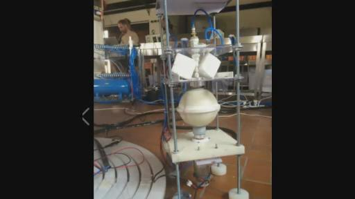
（反应器B）
就是有关反应器B它当中有一个悬浮的核，是它释放出了这种峰值或释放出了这种增强的情况，这种突然增强的情况在反应器壁当中。所以我们观察到了这种突然的增加，但是你需要去从整体的这些参数中去观察这些事情，去分析这些事情，我想大多数人只制作了单独的一个反应器，所以看不到这么多相关的参数，我们这里能看到的那样，但是因为我们现在所面临的是真实的状况是，如果你回来然后观察整个的大的环境的话，实际上你经常看到的是在实验中的一些侧面的反应器，如果说给你看一个整个地面的鸟瞰图的话，你能看到什么呢？你看到的会是氨基酸它分子的等离子体一样的结构！实际上你看到的是同样的结构。就象是氧气它处于中间的位置，其中的一个反应器很微弱，它的作用就好像是JOHN做的那个反应器，它是用来吸收能量的，它相当于氢气，就是根据其他反应器的需要来不断地增加和降低它的场体。还有ARMEN的反应器它在左边，它就象是我们所称的氮气，因为它可以提高或者降低场体，因为随着其他的反应器的需要不断的改变。然后有一个静止的反应器，它设置了探测器在后面，它相当于碳的作用，相当于一个通讯沟通器，也就说在三个其他反应器之间的一个通讯员，中心的反应器它把所有的场体结合在一起。但是当你看到在不同方向上电流的出现时，就是MARKO运行的E号反应器上面出现这些情况时，
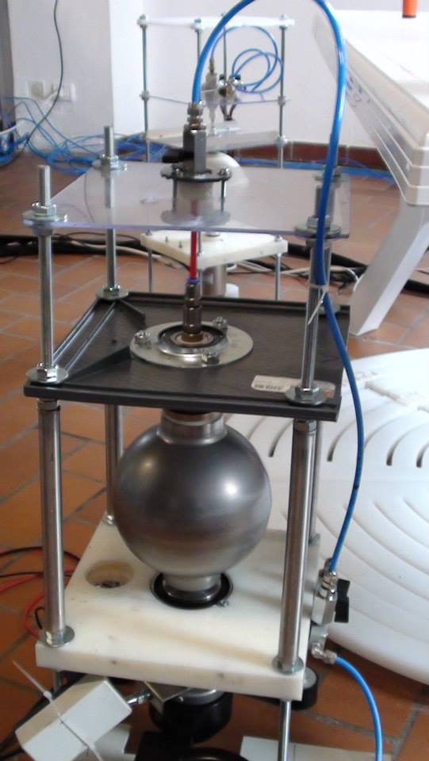
(E号不锈钢反应器)它非常类似于在碳中的石墨烯一种表现了，我们看到两个反应器之间在60cm之内的距离，我们看到了不同的方向上的等离子体的流动，我昨天也解释过这个事情。等离子体的场体流动出去然后从上端的入口又回来了，在这两个反应器之间在彼此相距60cm的这样一个范围当中，我们制造出来等离子体的环境，它有一个还没有达成平衡的边界，所以整个的结构，就是我们在这里所做的这些事情，我想在下面的几周或几个月中，就是去创建一个比较均衡的等离子体的确认以及它们之间的相互作用。这也是一定将会发生的事情，你可能看不到那种非常壮观的飞行的场面，它可能会发生。如果我们能够达到这种状态的话，在目前来看，就像ARMAN所解释的那样
，我们首先要把JOHN的反应器给它倒置过来，因为我上周和MARKO还有ARMAM，当我们把这个反应器放在地板上放在旁边之后，来看看在这个地板上它们之间相互作用，然后来观察它们会如何去作用。它仍然还会指向中心，然后我们把这三个反应器都设置成朝向中心反应器的这个位置上，就像一个大炮一样，我们一点一点的来抬高它，三四步的这个状态，然后再来两三步，再来观察这个反应器的底部，所有的三个北极，一个是它们的场体在制造线上，另外一个就是在上面，在反应器的北极上，就是在中心反应器的北极上，来理解它的行为特性，这也是我们如何把这些反应器都前后设置的这种方式，这实际上是为了这种太空反应器的这种星体组合所做的一些设置，实际上实际上也就是说在太空中，这种太空反应器的一个组合形式的一部分。
因为逐渐的当我们做一些事情之后，等过段时间我们回过来再来看它的时候，我们知道这件事情我们之前做过了，那么做这个实验的原因是为了去观察反应器的效应，当它们位于侧面以某种角度位于侧面时的效应或反应，因为在未来的时候，当你制造反应器来实现太空远行的时候，你需要一个中心内核以星体组合的形式表现出来，同时你也会需要在它的边界上有一系列的辅助的反应器，也就是在整个飞行器的外围有一系列小的反应器，这些是需要的，这些反应器它们并不会朝向中心的这四个反应器，但是它们朝向它们之间相互作用的这个范围上来，相互作用的这个线上的，一方面是一种保护系统，就是保护之用，另外它也是为了用来制造材料作用的，还有一部分是为了当你想达到某种速度的状态或某个位置，它有这样一个作用。就是将这个速度提升到某种状态或某个位置上，当你在这些深度磁场中运行时，你就会制造出一个额外的防护罩，在相反的状态下，相对于你的反应器来说，因为它在边界的地方上，在90度角的位置上，我们可以改变它到内核的角度上，这样的话可以获取到能量的供给，或磁引力场的等离子体来自中心内核的，那么它实际上意味着你在流动的方向上可以增强磁的防护罩，或者你可以和它对齐，所以当我们看到飞行的状态中的这些飞行器时，你会看到在它的周围出现了这种发亮的白光，一种闪烁的光亮。在三个内核和它的母核中释放出来，这些光亮实际上并不是为了显示说我们已经到这里，这些光亮它实际的含义是反应器已经处于一种特定的位置，以便能够创建出一种特别的条件或状态来保护飞行器，保护飞行器它的反应器并且能够创造出一个环境，来实现它的整个反应器的防护罩。这也是我们所做的这些实验，然后我也向我们的知识寻求者解释过这些情况，所以说我们把这些反应器放在旁边，实际上不仅仅是去测试它们的场体，而是开始理解下一步我们要做的这些实验的过程，能够实现整个组合的一个保护，就是去重新的来排列这些内核能够去制造出一些材料。现在你往其中输入场体的时候，我们就观察到了改变，但是我们最初在这里花了两个月左右的时间制造出了所有不同的反应器，就像你和所有来自世界各国的普通民众所看到的那样，在这个过程中，我们经历了成功和失败，如果你现在再来观察它，看到了我们的破裂的反应器，它的一个设置的情况还有改变它的电机的这些情况，现在我们可以去做我们对反应器想做的任何事情，比如说现在我们把JOHN的反应器设置成了倒置的情况，它仍然还会运行，我们给它设置到一个角度上，它仍然还会运行，我们可以把它放在地板上，但它仍然还可以运行，因为所有之前的这些辛苦的努力现在都有了回报，我们有一个非常坚固的内核基座，我们就像JOHN所解释的那样，有两个钢质的环体在反应器的侧面，这也是为什么在它的图表中会出现峰值的情况，这个内核它的平衡的方法实际上是由YVAN想出来的，这是几周前想到的，因为当时之前它运行时晃动太厉害了，所以他就在上面粘上了一圈的胶带，就是一个环状的结构给它放在反应器的外侧，然后让其运行了两三周的时间，结果它的这些胶带就脱落了，我们实际上就停止了这个内核反应器，然后就在上周或者说过几周就要重新把胶带给它再放上去，MARKO他也在过程中又多用了一些胶带使它处于稳固的状态，因为这些垫片也开始脱落了，然后我们就可以正常的运行了。因为我们并不需要再等待等离子体再次被制造出来，因为在它其中的这些纳米涂层就已经实现了对等离子体的包容，之后我们再一次启动它，结果就发现什么也没有发生，在过去的两三周的辛苦取得了成功，它最终给我们带来的是一个非常稳定的一个运行的装置，这就是我们所能获得的一个成果。四个半内核的反应器，现在我向知识寻求者解释我们实际上处于一个非常优势的位置上，而且很快在今后的几周，我们会把另外的一个完整的球形的四个反应器组合放在这四个半球形的反应器组合的旁边，
现在我们已经拥有了所有的这些所需装置和设备来为它，我们可以为整个装置提供电源，所以那个时候，各位就可以看到两个星体组合的一个配置了，而且我现在就可以打赌，哪一个可以先一步实现飞升的效果，因为我对于它们都非常的了解，因为事实上所有的这些反应器，除了那个陶瓷的之外，都是属于凯史基金会之前所做过的反应器，都是属于基金会的，而且都是在过去的这些年中逐渐制造出来的，所以我对这些反应器的运行时的特性是非常清楚的，所以你会看到它们出现了一些新的特征，一些新的等离子体的状态，然后你就会看到这两个组合之间的相互作用，哪一个组合会给予输出，哪一个组合它会实现吸收，我们把YVAN的反应器放在旁边，但是它仍然还在和其他所有的反应器发生着相互作用，它仍然还掌控着这一切，因为它是更大的质量的一个承载者，尽管在星体组合当中的这个中心反应器还在运行中，但是它的主人仍然还在YVAN的反应器中，即使是我们已经把它拆除，就是断开连接的时候，然后把它放到了整个组合的一边，就好像你在图片中所能看到的那样，我们在它的前面放了一个磁力的塑料，实际上是为去阻碍它，但是你会发现它仍然还在起着指挥命令的作用，因为它内部拥有巨量的等离子体，所以你需要理解即使是你自己在自己的实验室研究中，无论在研究什么，都要注意你需要理解整个完整性，还有针对整体性它们之间的相互作用,而并不是仅仅去遵循某一个特定的数值，单一的数值，我看到了那个峰值的出现，然后我就做了一个很大的记录，然后我当时在实验室里就写下来一个很大的提示性的一个记录，就是不要碰任何东西，然后我就出去了，回来时我发现应该是有些人动了它，我当时就不理解为什么会出现那种情况，我当时认为它只是一个峰值，其实并不仅仅是一个峰值，所以我们只好再继续等待，当它下一次峰值的出现，就可能要比之前等的时间要更长一些，实际上只是去观察这些数值它们是如何运行的，以及它们之间是如何运行相互作用的，需要等待多长时间才能出现这样的情况，会出现什么样的一个强度，为什么会出现这种突然的增强的情况，那么这些峰值和整个反应器的等离子体运行是无关的，但是这些峰值所展示出的却是一些非常危险的情况，就是在你的整体结构和等离子体设置的环境当中，那么实际上是很危险的情况，因为这些峰值的出现是因为巨量的等离子体在一个错误的方向上被制造出来的，峰值的方向是如何被制造出来的，那么它意味着有些东西它一直在保留保存着，我并不感兴趣是否它的数值是否达到0.12，13或者100这样的数值，因为对他们来说那是一个峰值无所谓，但是对我却是一个危险点危险的隐患，就相当于你正常运行的时候我们的飞行器就会翻滚，但是我们的知识寻求者并不理解这个情况，所以说这些事情对我来说都是非常重要的，要发现这些问题，在我们最终实现这些之前要发现这些问题的根源，也就是说你需要观察电机的运行，去观察电机的峰值，还要去观察其他电机的特性或者行为，这个峰值是不是由于其他的电机吸收到了能量造成的呢？还是只是被环境吸收呢？
同时需要观察它在第二个仪表当中是如何表现的或者在第二个探测器是如何反应的，以及其他的反应器核心是如何完成的，你看到这个巨大的波动的话无非是出现了轴承方面的问题，除非是在旋转方面出现了一些问题，那么能够看到这些数值的重复出现以一个同样的次序上，实际上它就可能意味着它们吞掉或者是对等离子体的一个阻碍，等离子体的这种阻碍的情况是一个非常危险的情况，你们一定要试着避免这种情况的发生，同时去中止这种情况，因为就像我们看到的MARKO的反应器用到的是钢材质的反应器，我们在它上面设置了侧面的探测器，在它的钢材质的内核上我们有2个等离子体，在同一个内核中有2个等离子体，这是由于它的构造实现的，因为MARKO它一直非常用心的去计量整个这些数据，先从南极一直测量到北极，然后进行了大量数据的记录，我想在一个点上他可能就记录了20-30个数值，从一个数值到另外一个数值的过程中它可能有20-30个数值的记录，通过这样的一些做法，我们看到了有2个峰值的出现，还有对另外2个的压制，现在如果其中1个等离子体在其中环境当中释放出来的话，将自己释放到另外一个等离子体当中，这个时候只有上帝才能帮助你了，因为这个时候你会失去一切在太空中的话，现在我们又看到了同样的事情，在中心的主反应器当中，昨天我们也出现了这种峰值的情况，我并不关心它这个峰值的数值，但是我从失败的角度上对这个峰值是非常关注的，为什么它就会因为在几秒当中的时间中，当第三号反应器的它的外核突然间降低到0.1安培，你需要去观察因为它实际上有3个反应器在它的周围都在正常运行，因为在它的周围有3个电机在正常运行，所有反应器整体的一个运行的重量是22KG,所有内核的构造重量大约是9.5KG，那么我们实际上同时运行3个反应器，3个内核，转数基本上低于了每分钟1千转的状态下，变化大约在6-10瓦这样一个状态下运行，那么这是一个很大的量，在大多数情况下这种方式现在它是由等离子体带动的，并不仅仅是轴承带动的，这也是为什么我们所看到的一个非常小的变化在的离子体的场体当中，在ARMEN的内核中他就放在了侧面上，就影响到了内部的运行，相对其他的反应器来说，相对于其他内核来说，所以我们要从一个整体角度来观察这些问题，我们实际上应该开始用这样整体的方式来观察，就是每一次我们进入到实验室的时候都会改变一些数据，但是还没有人注意到这一点，即使是电机它也在改变，因为你改变了整个装置的环境，太阳也会影响到等离子体所处于的环境，那么你需要观察整个的结构，你就会发现我会向你提供的建议，如果你要制作一个反应器的话，你要把反应器制作成一种可以被打开的状态，然后在后面的几周或者几个月过程中，你仍然还可以实现对等离子体的限制和保留，实际上你可以在这个宇宙中的任何地方，在没有使用到电机和包容装置的地方都可以制造出等离子体，这是我们这些知识它的的扩展，它的一个今后的一个扩展，也就是说之后会去详细的来介绍这方面的知识，但是你需要去知道观察这些事情，不然的话每个人就都成为魔术师了，如果你能创造出一个动态等离子体的环境的话，一旦你建立之后呢，还可以把它给保留住的话，
能够使得它和另外进行相互作用的话，这种旋转速度和位置将会受到其他反应器的影响而出现变化，所以需要始终记得的是太阳的表面并不是太阳的一个容器，比如说把太阳放入其中的容器，因为太阳的表面实际上是把磁引力场的这些物质它可以实现物质化，可以在它的强度上降低到一定足够的程度，以便能够成为液态，或者成为我们说的液态的等离子体，这也是我们将利用这种甘斯状态的等离子体要做的事情，也就是说这就是我们将在甘斯状态的材料，要生产甘斯状态的材料，那么这种新的甘斯材料的反应器实际上就是由JOHN他用陶瓷反应器当中所用的那样，它是他上周在比利时制作完成的，像今天就送到了制造商那里去进行生产加工了，所以下周我们就会有2个反应器里面装都会只装入甘斯了，但是在里面在这些反应器当中我们还是放入了一个中心鞘这样的一个设置，那么在中心鞘上面也会有纳米涂层处理，以便让它把等离子体保留住，以免运行时候来回的晃动，所以说它实际上是我们这项知识的一个扩展，我们下一步要做的就是要实现平衡的等离子体在这4个反应器之间，目前来说JOHN的反应器实际上就相当于把所有场体给吸入其中了，那么它到底把这些场体吸收到了哪些地方对我来说仍然也是个秘，因为我现在还没有理解反应器它到底是如何能够吸收那么多的等离子体，并且把它所有的场体保留起来，因为它所做的就是将它所吸收的这些场体的一部分转换成了它内部的等离子体，因为我们是通过它内部的面板的这些控制探测器上面的数值看到了这些的，在这些出口的控制器上看到的它的出口的表现，实际上它会直接进入到空气中，在这个路径当中唯一有的就是JOHN的反应器，那么这就显示出反应器的特性和其他的反应器是不正常的，这种旋转周期出现的这种情况，如果你能持续不断的看到JOHN发布在这里的在旋转中出现的状况，要去观察它们2个上面的这些所有的出口，然后在没有用到JOHN的反应器上的探测器的情况下，你就可以部分的理解反应器它的特性了，因为你会在非常接近内核的时候就能够读取到，也可以在远离反应器将近60厘米的位置上也可以读取到，它会向你显示你能接收到的这些数值，它是如何来运行的，可以来作为引力场强度的这种情况来开始的，另外一个作为磁场探测器来使用，我也是在过去的2-3周当中意识到的，实际上我把知识寻求者推向了一个他们觉得不是很舒适的环境中，因为它们还处于这种对材料处于精神分裂症的情况当中，对材料有这样一个状态，改变这个状态也是需要时间的，各位也看到了其中出现了很多抵触的状态，这也是因为他们没有从一个整体角度来观察这些问题。这一切也会一直继续进行下去，一直等到他们完全意识到这一切到底是怎么回事儿的时候，我会去遵循并且试图去把这些事情一步步的给设置好，但是直到那个时间之前我会继续，因为目前来说大家所有的兴趣都集中到了它是否会实现飞升的这个事情上了，实际上为了实现这种情况他们已经做了各种各样的小的一些方式或者技巧来实现这个目的，都是为了能够看到会不会出现一些飞升的情况，做了很多这种小的装置的目的都是为了看看能不能实现飞升，实际上在你理解了如何去控制并且去对场体实现一个平衡之前它是不会飞升的，
因为如果它真的飞升的话其中一个可能会飞到在你的身体，或者飞到你的脸上者可能飞行到建筑物当中，那么你是看不到整体的飞升的。可以对一个单独的反应器实现飞升的情况实际上是非常简单的，但是如果你用星体组合的话，这里面就出现了一个整体性的情况了，但是同时在这个过程当中知识寻求者也会学习到在整体的这4个反应器中的一个运行的情况，他们正在通过一个反应器的来控制星体组合的反应器组。这种情况是会发生的，在太空中你可能会出现失去等离子体或者反应器的情况，它并不意味着结束。实际上它只是意味着你如何能在这个时候进行正确的控制以便把它消除掉这种情况，你可以使用边界的反应器来对它进行一个压力，以便于实现一个虚假的状态来制造出它所需要的等离子体，或者用这三个反应器制造出一种虚假的环境，或者想象中的环境，让主反应器在它的中心上出现，那么这意味着什么呢？就是说希望在今后的1-2年中，当我们的知识需求者它对整个这些知识技术了解的更多了之后，我们会把中心内核从整个的设置中去除掉。而这3个反应器本身就能够制造出一个主反应器。这会给它们带来一个非常舒适的环境，实际上它们就可以制造出它们本身的等离子体的磁引力场的环境，所以这种情况也是一直存在的，也是飞行装置安全方面的一个内容，就是说如果你失去了主反应器的时候会发生什么情况，它实际上并不是整个飞行装置的终结，而是实际上能够去理解如何能够创造出一个环境，同时在360度之间你可以制造出一个新的等离子体环境，在没有材料就是物质的状态情况下，这种状态你可以一直保持下去，一直到你可以去更换你所需要的这些装置，更换这些内核或者当你有时间制造出一个新内核的时候，实际上你也可以在没有某些内核的物理形态的情况下仍然还可以以这样的方式去运行长达上千年的时间，这个仍然还是知识寻求者现在无法理解的有关具体形态的状态的一个问题，他们想寻找的那些数据，你觉得把这些东西关闭就什么都没有了？不是这样的！因为它的峰值是没有意义作用，没有关联的。实际上这个峰值意味着问题到底出现在哪里，而不是一个解决方案，你越是增大峰值那它的数值越大的话你就制造出了更危险的一个情况，我有兴趣的看到是12.20或者无论什么样的数值的高斯在这些探测器上出现，但是这个峰值实际上向我解释了2件事情，这个等离子体被创建出来，实际上我在昨天也在实验室中解释了这个情况那么当时大家都没有理解，我知道那个峰值的出现，对我来说相当于一个危险点，随着峰值的提升，所有反应器之间的流相当于场体流动的数据也在增高，所以应该说等离子体是逐步的在得以提升，或者说在聚集，但是你需要了解到峰值它是从哪里出现的，是从哪里制造出了这个峰值的出现的，很奇怪的就是我们从这些数据中观察到这个峰值仍然还是会从内核当中的中心核里释放出来，和ARMEN的结合在一起的状态下。等离子体运行方向所表现出来的实际上是它来自哪里，它是由什么造成的，它是由什么组成的，但是知识寻求者他们没有看到这一切，对他们来说它只是一个出现的数据，
这些数值就在那里，然后想不到会发生任何其他的事情，这就是你需要去学习的东西，你需要从一个整体的角度来观察这些顺序，然后要去理解这些情况是怎么出现的，那么我们的反应器有的时候回到了9，但是却没有看到这种突然提升的情况，那么它就散开了某些东西在中心内核释放出巨大的量，那么在几周前我们也看到了同样的情况，在YVAN的反应器出问题的时候看到了情况，那么实际上你再一次看到了在铜反应器的后面有一个钢制的反应器，那么再一次又重新回到了我们看到的组合当中了，所以实际上现在是有这样一个位置，就是这些反应器它们又受到了这种充电的状态，实际上是能量又充足起来了，然后它们就可以向外释放场体了，然后他们也知道流动运行的方向，然后Y轴它会向我们解释何时如何这个提升将会实现，他们实际上离提升还有很远的路程，那么实际上有2次就比较接近了，那么即使是在上周他们也实现了一次比较接近提升的状态，但是提升最终还是被干扰掉了，那么我看到了这种情况，但是他们需要整个的学习过程，我们不会像魔术师那样然后向大家展示它能实现提升飞升，我不会这样做的！所有这一切都需要有一个学习，那么也需要进行各种的测试，我们需要能够在未来的时间，就好像在加拿大的反应器或者说在中国的反应器，我们需要把这些反应器都能够连接在一起，然后来进行交流或者说沟通，这个时候它会是一种即时的沟通，这一天最终会到来，我们会向各位来分享这方面的知识，实际上这其中一部分的知识已经开始了分享，实际上就是其中的过程的一部分已经在日本展开了，开始启动了，现在凯史基金会针对福岛的情况的一个立场，就是我们开始在一个非常高的层面上的合作，找出针对福岛的问题的解决方案，那么它是由日本政府做的主动接触和沟通来进行的，而不是由基金会来去主动和他们联系的完成的，我们之前有佐藤YUKAKO，和我们的知识寻求者在那些容器中进行了相关的实验，那么现在我们已经进入到一个非常直接的方向，就是说进入到一个非常直接的发展和评估的一个方向上，就像我听到的那样，日本的一个非常著名的大型企业已经用到了这项技术中的部分了，就好像我们在免费的U盘中所提到的这些技术他们使用之后呢就可以来利用其中的技术来吸收那些辐射，他们可以研发出相关的技术来实现对辐射的吸收，这实际上就是我们公布的甘斯的技术的使用，我们当时把这个U盘实际上也就是这些技术作为一个礼物赠送给了日本政府，那么现在至少他们也以另外的一个方式来对这个技术进行了使用，但是现在日本政府开始对这项技术更加的关注，想对这项技术的整体的一个情况有更多的理解，包括在核工业技术方面的一个理解。现在我们就进入到了一个更加密切的合作当中，而且我们现成也非常尊重他们所采用的方法，所有的这一切都是在最高的一个层面上进行的。那么事实上我们所有的这些往来的邮件都是受到监控的，就好像是比利时，或者是美国政府，他们给GOOGLE公司提交了信函，通知他们说我们是一个恐怖主义的组织，所以我们是恐怖分子，所以他们要求GOOGLE开放我们对外的所有的往来信函。接受他们的监控。所以现在如果这些美国或者是比利时政府，他们知道了我们现在正在和谁进行这种往来的信函的话。他实际上也可以看到，我们和世界各地的其他的基金会的，这种所有的这些往来信函。这就是我们目前所处于的一个状态。实际上，我们也是收到了来自日本的，非常高的一个层面上的和我们内部的一个接触。就是这些材料需要被清理掉。
以便于测试和评估，以及合作。这就是我们的这项技术是何等的先进。以及这些政府也尊重我们所选择的方式。同时我们还进行着更多的，有关清理环境污染的这些合作。我想詹姆斯（就是朱冀平）。朱先生他也会意识到这个问题，他也应该了解这个问题。我们已经获得了一些独立实验室的数据。那些独立的实验室报告显示，我们实际上可以清理掉所有的环境的问题，实际上也已经说明，我们可以清理掉所有的环境的问题。以及我们可以做的如何的迅速，以及看看我们能有多快的速度来实现这个目的。在改变磷的这个状态的时候，就是说在土壤当中所有的这些污染，在改变在我们的土壤当中，磷所造成的这个污染的一个条件的情况下，那么这种成功它要取决于，我们成功基本达到了60％－90％的一个降低。这个数据完全低于所有的国际标准。也就是说它的这个水，也就是这些水它可以安全地使用了。这些都已经得到了实现。所以现在，凯史基金会在这一领域已经进入到了商业运作的一个阶段，已经进入了商业发展的一个阶段。这是由这家公司所提议的，也是由这家公司实现的。这些情况他们提供了所有的数据，他们对我们一直都是非常开放的，非常坦诚的。包括所有的实验室的测试，所有的材料的数据的降低，都是以这种非常坦诚的方式把这些数据提供给了我们。我们在过去的几周也去过这个实验室，是由独立的实验室来完成这些事情。所以我们也就展示所有的土壤的污染，和所有的水污染
都可以非常快速的降低到一个安全的水平。这些都是可以通过我们研发的这些新的材料得以实现。通过我们这些新的材料和等离子体技术，所制造出的这些新的这些装置可以实现。所以现在呢，我们就进入了商业的阶段。意大利的发电机最终也得到了他们的确认。就是把所有的这些材料都组装在一起。所以在未来的几周当中，我们也希望他们能够完成这样的一个工作。就是可以将发电机第一次在公众场合展示出来。但是这一切都还是取决于他们，他们花了五个多月的时间，一直来制作的这一台发电机用他们喜欢的材料，以便能够制作出一台他们喜欢的这样的一种设计的装置，他们也使用到了新的材料，也是在过去的两天当中他们通知我，就是这个反应器最终已经可以进行安装了。他们感到比较高兴的是这台反应器，就是这台发电机，它应该可以持续运行３０－５０年的时间。因为他们说使用的材料应该说有足够的，能够满足它能够运行这么长时间，持续运行的一个要求。就好像各位看到的，在我们实验室当中的这些反应器。我们现在有４个反应器已经持续运行了３－４周了。其中一个出问题了，我们把它先从组合当中撤出来，之后又把它恢复到组合当中。实际上，这些反应器它是应该能够持续运行好几百年的。除非这过程当中出现了一些机械故障的话。即使你有了一个机械故障，然后你把等离子体通过纳米涂层，给它限制包容起来的话，那么你就是只是改变了电机，改变了结构构架，这是我们在几周前所做的这个情况。我们并不会去把内核打开，不会去影响干扰它的等离子体。我们把这个等离子体仍然保留在反应器当中。就像你把水放在容器当中一样。然后当我们把这个装置做好之后，我们再把它安装上，然后再可以重新的恢复运行。除非这个反应器它破裂了。我们实际上真的有一个反应器它就出现了这种破裂，就好像各位在上周的我们发布的图片上，所看到的那样。我们现在还正在制做的一个，就是这个被破坏了的反应器还正在制做当中。所以这个技术的发展会持续进行。因为有一些非常重要的事情，我之前从来没有和大家分享过。因为各位做为知识寻求者，做为来自世界各地的凯史基金会，需要理解在现实当中到底发生了什么！所有的测试，所有的反应器和这些数据，也就是你们给它发布到了互联网上。所有的知识实际上就已经得到了分享。他们都会即刻的，
给世界各国的太空机构，来进行解密和分析，还有那些核工业当中的这些专业人士去完成这些事情。也就是说，在我们的教学过程当中，我们也知道，他们也知道，我们说很多的这些知识，这种方式，所以说世界各国的这些太空机构，他们实际上了解我们所传授的这些知识的每一个细节。因为在历史上没有任何人会以这样的方式，来进行这样的传播这些知识，这样的知识的传播。所以所有这些反应器，所有这些教学，所有这些知识寻求者在这些脸谱FACEBOOK上，或者说在SKYPE网络的一些频道上面，就看到发布的所有的这些成果，所有的这些知识，他们实际上都有一些相互的关联。而这一切实际上都是受到了那些科学家，他们的关注，同时和分析。实际上从某种程度上来说，我们是在把知识传授给那些NASA的那些顶尖的科学家。但是他们有些太不好意思，有些太羞愧，来表达说他们在从我们这里来学习新的知识。那么同样一个情况，也实际上出现在世界各地的太空机构当中。所以实际上我们在这里发布出来的这些知识，并不仅仅是由各位来学习来分享的，实际上在背景当中的这些科学家，他们也正在密切关注着我们所做的每一个细节的公布，每一次新的发展，他们都会非常的关注。每一个发展以及我们所分享的每一样知识，他们都是非常关注的。所以这也是我们所带来的整个过程的一部分，这也是我们的福岛测试是如何的以这种公开坦诚的方式运行的原因。在我们公布了有关福岛实验，研究报告之后，４８小时之内我们就接收到了来自日本政府的一个接触。所以说这就是它是如何运行的一种方式。他们知道我们对我们的这个整个过程是非常明确的清楚。所以它实际上也并不需要等时机成熟的时候了，因为我们已经对外宣布，公开了这种制作的整个的方法。宣布了能够制造出类似的装置，我们实际上已经实现了这个目标。至少部分的辐射已经被解决了。其中一个你们需要意识到的问题就是，过去的这几周提到的一个事情，就是各位在福岛看到的这些材料，和相关的这些数据的一个降低的情况。实际上我们就是已经成功降低了伽马射线，而不是阿尔法和贝塔这个射线，因为它们是处于一种物质状态的。那么现在已经引发了一项技术材料结构。也将这些材料发给了负责测试的这些人手中。这些材料它事实上甚至可以改变阿尔法和贝塔它的状态和位置。那么达到一种正常的状态。各位看到的这些来自福岛的数据，就是这些辐射它的数据实现了降低，然后变得非常低的这种情况。然后有些人就给我写信说：你根本就不懂这些单位的关系，包括什么公斤，和相关的这些单位之间的关系。你实际上是一个傻瓜之类的这样一些说法，实际上我们理解我们所说的一切这些内容。很明确的知道我们在说什么。也非常明确的知道，我们所公布的这些数据，以及如何去公开这些数据。在这个级别上所工作的那些科学家，他们能够理解我们所公布的这些数据。因为从那些数据当中已经非常清晰的表明。
这是说这些甘斯的这个材料，它仅仅会影响这个辐射，就是磁场的这个光谱，那就是伽马的射线，在这个方面。但是当是这种氦的情况的时候，或者说是这种贝塔的情况下的时候，或者其它任何情况的时候。无论你给它起一个什么样的名字，它们就需要以不同的方式在它的水平上出现变化，这是这个材料可经做到的。这个材料在这几个月当中也得以制造。这些材料也会被送到两个核研发中心来进行测试。最终它会改变这样的一个立场或是位置。那么最终各位会看到这些数据。所以说整个的事情它是以一种方式来运作，就像我们所预想的那种方式去运作。我们所进行的这个教学也是同样的方式，但是制造出的这些材料，从甘斯到纳米材料，到其它的所有的这些，现在你实际上就需要开始理解一种新的，全新的，整体的知识。那么这个新的整体的知识，实际上也是非常简单的。这也是第一次，人类可以改变物质到等离子体。同时也可以将等离子体给它保留起来，在同时。如果你没有理解这个过程，它实际上是非常简单的。你可以将氧化铜，或者是铜，放到烧碱当中，你从分子状态下改变它的松弛的一个依附，到原质的一个依附上，而不是处于这种物质的相互联结状态，不是这种物质相互联结的这个约束，就是这个“价”。并没有利用这个物质的相互联结的这种约束。在同样的一个水平上联结起来，并没有通过边缘给它联结起来，在一个高温高压下来实现的这种情况。利用高温高压把它做成一个纳米的一个状态，实际上就实现了磁场的一个联结。而不是对实际的物理的一个表面的一个联结。不是物理边界的这种连结，之后再通过盐的成份，使它转换成了甘斯。你现在所要做的就是把这些材料，就是带有这些甘斯材料的，那么它其中也含有纳米涂层，还有它的磁场的光谱在其中。那么它就能保留住这个场体，它实际上它是磁场的一个等离子体，然后这些磁场的等离子体它们处于甘斯状态，在新的反应器当中，它们自己本身就会制造出这个磁场，这样一来就可以实现它们本身的一个分离。也就是说，在它们本身当中就制造出一个所谓的空洞，就是黑洞，或者说是一个首要的物质，在你的反应器当中。所谓的组源物质在反应器当中。这样一来你就回到了整个造物的过程当中的中心的地方。就是完成了整个造物过程的一个循环。所以中心的这些产物，实际上这也是史蒂芬.霍金他所提出的这些，非常愚蠢的一个说法，就是说黑洞它会吸收一切，一切的能量，和一切的所有的这些东西。而不会有任何的渗露的情况。而现在通过这些纳米的涂层，把它放到甘斯当中，然后这些甘斯都会制造出它们的很强烈的磁引力场，实际上你就可以制造出一个中心点，在你的反应器当中。它实际上就非常类似于主源物质的区域，就是这个主源的等离子体的一个区域。在这一点上你实际上就可以来分享它的这个场体，在内核当中来分享所有的环境的场体。所以现在你就不再需要物质的一个具体的物理结构，来保存住这些等离子体，然后在太空当中去运行。
这就是我们的知识寻求者一直都没有搞明白的地方。各位一直就是跟随我们凯史基金会发展的这些人，你们所试图去寻求的也是物质。而现在这也是第一次，你们能够理解你所创建出来的同样的东西就好像是磁场的一个间隙，就是在这些纳米涂层当中的这些原子之间，而现在你又制造出了同样的一个磁场的间隙在甘斯之间。因为它现在是等离子体了，在这个甘斯的层，直接在甘斯和等离子体之间，而它的中心的这个球体呢，因为它处于环中环的这样一个置物当中，就是主源能量的，同样的一个场体强度在它的中心呢，它会拥有同样的这个场体强度。具有首要的能量的一个组源物质的磁场，所以你制造出了这样的一个限制，一个空间，然后你去试图去挤压和打开这个等离子体，在你的反应器的中心的地方。最后你就会明白在太空当中这个旅行，它和时间和空间都是没有关系的，但是你需要去理解它的整个的过程。同时你也要理解这项技术会将你带到什么样的一个另外的方向上。这个装置呢，我们所制造的这个装置，实际上这也是第一次作为一个系统装置，我们把这些装置在2天前前公布出来。就是说在这一个装置当中，我们很可能实现了制造出六百万种组合的氨基酸被制造出来。在这同一个装置当中。它身上就涵盖了人类所需要的任何类型的氨基酸。可以让人类在，就是可以满足人类在神经系统和细胞再生的时候，所需要的所有的氨基酸的种类。这就是意谓着，针对人类的这些知识，它是可以被释放出来的，通过在我们的身体当中某些器官来制造出来，或者说我们所需要的那些组织纤维。所以说我们所称的这些医疗项目，它的这个发展还有这个制造项目已经从甘斯的状态发展到了另外一个水平上，以及另外一个方向上。所以现在你可以制造出不同的类型的氨基酸用这项技术。这也是根据我们的身体的需要，随时制造出来的。如果我的这种认知是正确的话，我希望它是正确的，那样的话，我们就会把这些知识给公开出来。那么就不会受到某些人，他们对我们的这种做法有任何说说三道四，这跟我们公布这些知识没有关系。也就是说它不影响到我们去公开这些知识和做法或者是决心。我们并没有进入到健康医疗领域，我们只是去为了能够支持它能正常健康的发展。在五月底的时候，曾经举办过一次会议，在欧盟委员会当中，其中就有人提到说，为什么这种另外的这种医疗方式不会被采纳的原因。当今的这个制药行业，他们没办法解决当今存在的很多医疗问题，因为当今这个主流医学界，有很多问题都没有办法解决，而且现在在欧洲和西方，这个世界的这种发病率要比以往任何时候都高。所以新的技术他们就有这样的一个空间，来展示它们能实现什么。那么通过我们的这项技术，通过人们的参与，和他们对这项知识的了解，我想在听我们交流的这些人，他们知道我在说谁。就是针对凯史基金会的医疗方面运作的一个新的结构，也已经被竖立起来了。我们也是希望，如果这一切都能够运行正常的话。因为我们之前已经达成了一些协议，因为现在也已经达成了一些合作，那么我们就会正式的来开启我们的这个健康中心，就是我们将会正式的来启动我们的医疗保健领域，或者说医疗保健这个部门吧。这样的话人们可以去我们的健康中心，或者说通过这个健康中心来建立联系，建立联结。从而能够建立起全球的一个运行的一个机构或者是结构。那么现在已经到了最后的一个阶段，那么之前的所有的运作都已经达成了协议，我们也已经看到了，已经完成的各项文件。那么我也要在这里，向那些为这些工作，做出了辛勤付出的这些人，表示感谢！你也知道我说的是谁！同时我也向你们所取得的这些成果表示祝贺！那么整个的过程是，我们处于这种沉默的状态并不是由于感到了害怕，而是因为人们现在越来越更多的理解了，了解了我们的这项技术。当然还有很多人希望我能够就有关１６号，我要前往罗马进行的活动做一个更详细的说明。（第三次翻译截止02：48：04）
我们也试图尝试建立一条渠道把这些信件直接转交给教皇本人，到目前为止他们还没回复我们的请求，但是他们知道我们为什么会前往那里，我会亲自前往那里，然后还会有些人随同前往，把这封信直接交给教皇的办公室。我们本来可以通过自己和梵蒂冈的渠道完成这个工作，这次我决定还是我自己来完成这件事情，因为它有一个特别的含义或目的，通过这封我们和各位分享的信，它实际是向世界各个宗教的领袖发出邀请，过去几天我们在凯史基金会首页也发布了图片。（首页地址：http://keshefoundation.org/）其中提到世界的所有的宗教领袖都收到了邀请在参加本月30号的会议在意大利，它的主题是“统一世界各地的宗教，以便实现世界和平”。它实际是一件非常奇怪的事情，如果你知道听到过G8或G20峰会的话，在过去几年当中，在每次的这些G8、G20峰会举行的同时呢，在世界各国的这些宗教领袖也会参加这些G8或者G20会才刚刚见过，他们也有一个单独的会议，实际上他们也是同样一个级别来举行这些会议，实际就是宗教领袖的G8G20峰会，他们本来在这些会议都会相聚的，我从未听说过有人缺席的情况，然后他们的会议结束后会向G8G20的首脑发一个公约，或一份文件。而且非常有趣的是如果你去看一下，2012年他们的这次的宗教领袖的会议的话呢，在他们提交的文件里，其中一段当中，他们说的话非常有意思，是在2012年G8第二次宗教峰会的提交文件当中的第三段的内容：我们在华盛顿DC汇聚在一起，在第38次G8峰会举办前相聚在这里，G8峰会将会在马里兰州举行，（02:50:25听不清）作为？的成员，宗教、佛教、犹太教、印度教、伊斯兰教，还有其他世界上的这些宗教，还有两个，锡克教和基督教，（锡克教是印度的一个宗教）聚集在一起继续我们的工作，是由我们上次宗教G8峰的首脑会完成的工作。宗教领袖已经在过去的7年中一直在共同合作来反思全球的这些活动，就是对世界上最有权势的这些各国首脑他们的国际议程进行反思，并对他们的所遇到的各种事情提供各种建议和意见，我们的宗教的传统就是，它实际是由根深蒂固并广泛传播的一个信念就是去支持自由公平人权的工作，作为世界宗教的领袖，来自于世界各国的有不同传统的宗教领袖，我们要强调的就是G8，G20峰会需要尽快转变世界各国的社会结构，我们也看到存在经济方面的不平等，同时也造成了社会的不稳定，第二条，我们也一直在倡导G8.G20峰会把主题转移到来共同处理人类安全的问题上，包括健康和共同的利益这个问题上。第三条就是说G8G20峰会的作用是要重新商讨国界的结构，因为它实际给我们造成了贫富的巨大差异，这也是由于在经济和社会不公平所带来的这些结果，还有政治的官僚主义，这两者间差异不断地增加，在世界很多地方出现的，经济方面表现的不公平性，食物、健康、人身安全方面的事情，所以他们想实现对整个人类的和平和安全平等。他们的文件上面所写的内容就是相当于希望所有人类成员的公正和平等。他们的文件继续说了很多的内容，有6，7页的内容。实际上所有这些世界宗教领袖唯一没讨论的内容就是，他们如何希望平等和财富，或者说他们希望得到财富上的平等，但实际上现在是时间把所有的宗教都实现一个平等的地位，这也是16号会议的一个目的，来呼吁世界各种宗教领袖统一，不仅仅是通过口头的方式来完成，或者他们不停地去建议其他事情，而不谈所有宗教统一的事情，如果我们统一了世界的宗教，我们今天看到的99%的人类面临的问题都会结束了，这也是我们这次交流和16日活动的一个目的，我想各位也会理解，无论是教皇还有尊贵的弗朗西斯（又译名方济各，链接：http://baike.baidu.com/view/996712.htm?fr=aladdin），还有哈梅内伊阁下，还有其他的宗教领袖，就像各位在我们的宣传画看到的那样，
现在只是告诉别人怎么做才是和平和平等是不够的，现在实际是时候需要各位现在采取行动来实现真正的平等。现在呢，整个这件事情已经能由各位决定了，所以这也是我们要决定举行16日活动的目的，他们一直在提供建议，他们也希望实现公平正义，平等，在不同国家的边境上，将所有国界统一成一个国家，为什么我们不在我们宗教界本身做这件事情，这样我们就不会有任何问题了，就像很多人知道的那样，我成为全职科学家之前，我是全职的国际贸易商人，在上世纪80、90年代，在欧洲东西部那些区别消除的那段时间中呢，我就曾到过哪些国家的边境那里，然后有件事让我很惊奇就是，我也经常想把这件事情和各国政要谈论这件事情，这个事情就是欧盟的成员他们在旅行的时候，比如可以从欧洲的葡萄牙旅行到俄罗斯整个的过程不需要有跨越国界的检查，在这些国界上没有军队的驻扎，这是为什么通过前任教皇协调的共同的努力，就是梵蒂冈前任教皇协调一致的努力，
这种他们说的基督教领域的统一就可以得以实现呢？这次我们要去梵蒂冈的一个原因实际上就是要请求梵蒂冈这任的教皇来实现全世界的统一，我想这一天也一定会到来。实际上他们也一直向我们建议，在过去7年中，他们提供的建议就是世界各国的政要在经济和社会结构要有这样的转变，但是他们没有看到整个社会结构的，还有相关经济的不公平的问题实际上都是由于世界宗教的不同造成的，也就是说所有这些问题都是宗教产生的，如果你能够将所有宗教统一然后为一个目标努力的话，
我们不再需要国家的任何边界了，也不需要在那封信里提到的不需要任何的军队了，那些花费在，后来成为他们所称的在上世纪90年代他们说的涡轮。随着欧洲国家不断地关闭各自的军队，缩小军队的规模，也已经没有了东西国家的区别，没有了相互争斗的对象，所以他们把这称之为和平的红利，和平的红利实际就是每个国家之前所拥有的成千上万的军事力量被降低到只剩下了几千名的状态，现在大多数的国家他们只拥有了一些业余的士兵，只是以防万一做的准备。而这些以防万一始终没有到来，所以很多士兵参加到了非洲或者其他战争地区的，在联合国的这样一个领导下的维和当中，为什么我们不能够通过宗教的统一来实现全世界的这种和平呢。这也是我们16号准备提交的一封信的内容，我现在也要把一些事情传达的非常清楚，我也知道很多的交流都会被翻译成不同的语言当中，会有很多人知道我们在说什么，同时很多世界各国的政要也知道我们在说什么，如果世界宗教领袖没有很快的来同意这件事情呢。之前我们将U盘交给世界各国来启动知识传播的这个事情，实际上们会用同样的方式，如果他们不同意的话，我们将公开一些知识，这些知识会使得整个世界的宗教变得没有任何的意义。这一切都会在非常短的时间内实现。情况是非常明确的，我们把这封信交给教皇，他接不接受都不重要，因为他实际上仍然还是人类的只这种关注物理习惯的原因造成的，我们可以来感动他的灵魂来实现我们所希望实现的事情，我们要向各位展示类似的事情，实际上我们已经完成过类似的事情也经历过类似的事情，但是实际上我们将这一切都开始运行了，实际上需要的话，我们可以让所有宗教当中的先知和上帝都将它解释掉，其中也包括将世界上所有的宗教中的上帝彻底终结。这样所有的宗教都会统一了，就像我说的那样，我们的邀请信是今天早上发出去的，它是由我们在德黑兰的站长完成的，这是制造的非常完美的信件，它和我们的邀请信的一部分，就是说代表整个人类，请接收这次的正式的信函，请接收这封正式的邀请信，请求阁下的参加我们的这次会议，受邀请的包括世界各个宗教的领袖，作为上帝的使者一普通人的身份来参加这次会议，而不是像他们之前所穿的长袍带着地位来参加会议，这次是为了统一世界的宗教。
我们会把这封信交给这些宗教领袖，可能是我们亲自的方式来完成，或者会以不同的方式交给这些世界宗教领袖来参加30号举行的会议。无论他们是否会参加我们都会完成我们要做的工作，就好像我对知识寻求者解释的那样，你们在地板上运行的反应器，你们不要去关注它外表的物理形态，因为在它里面有了等离子体，就好像各位看到的结构当中的等离子体，它本身就会影响到另外两个反应器当中的等离子体，所以说如果在他们认为自己很高高在上的神职人员，宗教领袖不去接待我们的话，因为他们目前的物理的结构实际上是他们的身份地位，实际上我们早就已经接触到你的灵魂，我们创建了这个灵魂，所以我们可以接触到灵魂，就好像是我们在和知识寻求者谈到我们可以改变它的行为那样，这是今天早上和知识寻求者谈论的事情，就是说如果你改变了一个反应器的气体含量的话，它同样也会影响旁边的其他反应器的运行情况，这个道理是同样的而不是由我们做出选择。同样的事情会发生到你的灵魂上，现在是你自己做出选择，而不是我们来做出选择，所以要在已经设置好的情况下来做出改变，所以这个答案也就解释了周一会发生什么，我们会前往那里的，我们会交出这封信，无论他们是否接受，即使是我们会放到梵蒂冈的地板上然后离开这都无所谓，这意味着这封信他们已经接受到了，这就是我们的目的。因为在这个层面的这些人需要去接触到它，通过一种合适的方式，我也将像我们其中的一位知识寻求者解释这个事情，这是非常简单的事情，那些人在圣殿当中他们做为世界的宗教的领袖，他们在人们去朝拜的房子当中，他们加在了身上很多头衔，实际上人民并不是想到朝拜的房子当中，无论说它是教堂还是清真寺还是寺庙去，他们不是为了传教士去祈祷，实际上他们到这些地方是向自己所信仰的神分享他们的灵魂，无论是基督还是默罕默德，还是其他的宗教，所以说这封信我们会在16号的时候提交上去提交给梵蒂冈，而最终这封邀请信也会发给全世界所有的宗教领袖，这件事情正由凯史基金会德黑兰团队抓紧完成这件事情，他们设计得非常精美的信件，适应这些人的位置，他只是象征性的，这也是我向我妻子解释的一个原因，你有没有听过英格兰的传教士的事情，他公开说不知道强奸小孩子是犯罪行为，如果你去拜访他的FACEBOOK账号的话，你可以很明显的看到他写的这段话，所以说这些人他们总是利用上帝的名义满足自己的私欲，实际上就是我们要改变这种做法就是要统一宗教。让所有人知道，强奸儿童也是一个犯罪行为。现在这个事情，在英格兰的教会当中也在讨论这个问题，这个传教士实际上是大主教，级别很高的主教，他在法庭上提供证词的时候说的，这也就解释了如果在国家宗教如此之高的神职人员他都不知道强奸儿童是一个犯罪行为的话。我只能说上帝才能帮助比利时的国王，这也难怪他做了这么多恶事，而自己还不知，因为他一直受到错误的人类给他提供的这些建议。所以周一在罗马举行的这些会议你们可以参加，但是你带来的是你的灵魂而不是你们的物理的身体。
RICK：凯史先生，可不可以请你谈下那些不能前往罗马的人，能不能做什么事情来支持你的这次活动呢？在他们的家里或者在自己的城市或者国家当中。
KESHE：实际上这样做并不是来支持我本人，实际上是在支持你自己和整个的人类，可以把这封信交给你任何认识的传教士或者其它任何宗教的宗教人士，或者各个宗教的有一定级别的宗教人士，或者说是你非常敬仰祈祷的宗教人士，可以把这封信发给世界所有的宗教领袖，也可以发给世界各国的政要，我们会在今后的几个小时当中把这封邀请信发布出来，等我们在德黑兰的站长确定这一切都就绪之后就发布出来。所以实际上这意味着当我们前往梵蒂冈的时候，梵蒂冈的人他们就知道我们前往那里把这封信息提交给他们，实际上这个事情就好像是我们凯史基金会中国的方式去轰炸世界，就是比利时的警署，他们收到了来自中国的大量的信函，这样的做法让他们把这些信也转发给了他们其它的警署那里，他们想知道为什么会有来自中国的这么多信函，他们想中国到底发生了什么事情，这实际上就是其中一个人去了解这个时候向另外一个人所问的问题，实际上各位要做的事情只是把这封信作为传真发出去，是的，朱先生了解到的，在中国到底都发生了什么事情，就是中国的凯史基金会的团队做了哪些工作。实际上他们是我们最坚强的一个支持者，实际上中国团队做的事情已经彻底的震撼了比利时的警署，朱先生他应该知道这个事情。
RICK：这件事情听上去比较滑稽，同时也有讽刺意味的。
KESHE：是的，但是我可以告诉你一件有趣的事情。我们需要来说这件事情，因为他是我们基金会其中一个辛苦努力工作的绅士，他是马耳他人。他们实际上就提出一个问题，中国到底发生了什么事情，即使是在马耳他的警署也想知道为什么这次会有这么大的举动，中国发来这么多信函，他们想知道发生了什么事情，这实际上也是凯史基金会的力量主要来自哪里，所以实际上这就是你需要做的事情，你做的事情都是为你自己而做，而不是只为我们做，实际上我们只不过是在地球上存在几个小时的物理形态而已，那么整个的改变已经到来，凯史基金会最大的一个问题就是我经常说的那样，就是我们并不是一个绿色和平组织，然后让人们参加斗争，或者是其它的宗教组织或者机构。我们传播带来的知识，它会实现和平的到来，它会强制和平的实现，他的美妙之处在于，我们也想知识寻求者提到这个问题，但是他们可能还没有完全理解这个问题，对他们来说只是耳旁风而已，实际上在过去的两三个月的时间中，实际上这些知识可以通过这样一种方式分享给人类，让所有民众都可以用这种方式获取到这些知识，这些知识和人的肤色，宗教信仰，国籍和种族没有关系，他不需要支付任何费用就可以了解、掌握这些知识，所以没有申请专利的需要，如果你能制造出一个装置，然后想要去分享的话，然后你也可以在这个过程当中获得好处。因为每一个人都可以做这个事情，你就没有办法给它设定几千欧元这样一个价格，因为它本身的成本就几欧元而已，这也是将要到来的整个改变。所以说周一的时候我们会在梵蒂冈的中心会面，实际上在我把它称为针尖的这个位置会面。
RICK：我想从术语上讲它应该叫方尖碑。
KESHE：好的，方尖碑。他是被移到中心的位置上的，这个位置是有目的的，上面会有光亮照到那里，因为阳光可以照到方尖碑的顶上，实际上相当于给人类带来新的光明，所以无论谁去我们都会在那里会面。但是我知道至少两个人去那里，一个是我，一个是我妻子，其它无论是谁都可以去。我们所去的人的数量实际上给世界的和平带来更大的希望，世界和平首先是通过宗教的和平才能来实现的，然后我们再看下一步怎么去运作，所以说你在自己的国家可以通过不同的方式来祈祷，让这些世界的政要，那么如果他们能够接受到的话，他们实际上就会受到了凯史的启发，这样就会变得更加富有。通过这样的方式，他们就可以看到和平的方式或者道路（机会），所以你可以把这封信转交出去，因为很多的宗教的高级别的人士也是非常关注具体的物理形态的，他们也需要把一些重要的事情也会上报给他们上面更高级别的人，主教或者大主教，或者主持方丈，这样他们就可以理解改变的时间已经到来，如果他们不去做的话，那么这次将会由我们来做这件事情，因为这是一件非常滑稽的情况。它的状况就是你把犹太人，穆斯林，基督教，然后佛教，他们都放在一个房间里的话。这些都是非常信仰宗教的人，你会发现他们都在不同的时间祈祷同一个事情，但是他们仍然会称呼自己是另外一个宗教，没有一个人会去说杀掉另外一个人，也没有人会给另外一个人下毒，而真正的毒药是，当你修建了宗教需要的庙宇这样一些事情的时候，这个建筑物它是需要钱财才能建造出来的。这些建筑也可以储存很多的财务，这个过程当中会出现很多的不正当的行为，圣殿的场所它实际上是人类灵魂去祈祷的地方。这些都是人类需要理解的地方，最终人类都会发现在宇宙当中是不存在宗教，金钱，以及对物理形态的依赖，这实际上是地球上非常不好的习惯，他们只看重具体的物理形态。
VINCE：凯史先生？
KESHE：我在。
KESHE：这就是我们所做的事情，这就是我们要在梵蒂冈所做的事情，我们要传达的信息是非常明确的，当然。这是整个的事情的一部分，这样一来他们也可以参与到事情当中来，我们的会议将在本月的30号举行，地点就选择在我们的凯史基金会，在本月26号的时候，我将会接待来自印度的级别很高的宗教团体的首领，我们也知道30号那天的时候不会有人来的。但是我们也为此做好了准备，这就是我们最初把U盘交给各国的时候是一样的，最后他们主动的来要求获得U盘，但是这是整个的布局，但是我们也最好了准备，我们设置好了整个的这样一个盘面，让它处于运行的状态当中。这就这也是为什么我们把会议地点选择了在凯史基金会中心的地方，首先第一点呢，凯史基金会中心，它的环境优雅，有品位，可以接受高级别的官员，第二点也就是我们说的，我们之前也说过，在我们桌子周围可以有来自穆斯林伊斯兰的或者基督教的人，无论你给自己定义的什么名字，但是我们都选择的同样的道路，所以实际上我们有完备的设施来完成这些事情，而且他们会提前通知有谁会来这里，在我们的凯史中心可以轻松的容纳五千人的到来，他们可以把他们所有的追随者都带来，我们还有其它的一些建筑物，这些空间也可以轻松的容纳500人，无论在时间上还是空间上我们都不缺，所以我们不需要找其它的地方，整个的事情都可以在这里完成，我们不会有任何的改变，这些人他们必须在这里学习一些东西，他们来到这里是和其它人平等的来分享他们的灵魂。
因为灵魂它并不需要穿戴宗教正统的帽子、头衔、长袍，当世界宗教领袖他们意识到是他们的灵魂让他们彼此不同的，这就是为什么他们很多有人都走上歧路的滥用的权力的原因，实际上他们就没有意识到人们来教堂、寺庙、清真寺并不是来给他做祈祷。他们想去向基督或者默罕默德去祈祷，他们把这样的做法错误的定义为他们是在给他们做祈祷，因为他们认为在他们本身和基督或其他先知之间，实际上是没有任何的联系的。所以这种错误的方式，用这种错误的名义，就使得他们错误的认为他们是向他们来祈祷的。实际上他们什么都不是，实际上他们是要把他们自己的灵魂向神或者上帝来祈祷或者分享，实际上他们错误的期盼了人们对他的信任，他们实际上相当于迷失了自我，迷失了方向，所以大家前往教堂，你去祈祷实际上并不是向传教士祈祷，实际上是向上帝祈祷，和基督分享你的灵魂，因为你是和他们建立了灵魂上的契约，实际上和我们在实验室的一些反应器的表现是一样的，这种连接场体的分享，就是中间的内核和其它的反应器，并不是运行其他星系的反应器或者运行其他的飞船的反应器，所以这就是宗教领袖他们的一个错判和误解，他们就不理解人们去前往这些教堂或任何寺庙去祈祷或者去和他们愿意去称为任何的这些神去分享他们的灵魂
或者任何他们所称的东西，最后当他们意识到灵魂的目的，所有这些先知的灵魂都是一样的时候，这样就不会有任何的区别了，信仰基督教的人就会到穆斯林的教堂去祈祷，实际上我在小的时候就了解到这一切。各位可能也都知道我一半是受到了犹太教的教育，一半是穆斯林的教育，这就是我的这样一个背景，而且非常有趣的是，当我们的家庭，就是犹太的家庭到了英格兰的时候，在那里我们找不到按照犹太教规定屠宰的肉（KOSHER
MEAT，注：KOSHER标志为犹太洁食认证）。他们就说他们只吃XX，我们就需要到穆斯林的人开的店买XX的肉，因为他们两个实际上是同样的东西，为什么说人类食用的食物是一样的，但是上帝却不一样呢？他们实际上知道这一件事，但是他们制造出这种的目的是为了去赚钱，他的级别最高，他的银行账号里资金就越多，所以我们周一我们在罗马11点的时候会面，地点就会在方尖碑前面，我们希望这次方尖碑会发挥实现它和平的意义，无论他们是否接受我们提交的信函，最终我们会把这封信放在地板上，因为最终会有人把它捡起来，因为会是灵魂来做这件事情的。我之前也说过这件事情，在2年前4月21号，当时就是在凯史基金会中心举办的世界各国大使级会议，在20
小时之内，奥巴马就启动了这样的一个程序，针对所有和伊朗进行的交流，向伊朗提供情报的相关的事情，实际上主要的目标都是针对凯史基金会的。因为我们把这个技术转移给了伊朗，而美国之前是拒绝接受的，当时我并没有去因为这件事情和他争斗，我没有在外面发起攻击的行为，只是回了一封信提到，为什么一个国家的首脑，他能够去判断什么样的技术应该用在什么地方。我们也看到了结果，就是在不到8个月的时间之内，就是在他就职仪式那一天，他就通过比利时的大使向我们发出信函，提出愿意接受我们提供的U盘，实际上我们之前是向美国总统的灵魂发出了祈祷或者祝福，我们也向一些传教士祈祷，因为这些传教士他们的心灵也是和上帝最接近的，这样他们就离大门更近一些，这样就是我们要表达的意思。
实际上就不需要参加那些G8峰会和宗教领袖，他们会向政要建议所有这些做法，去除这些他们解释不了的存在的界线，现在世界所有宗教的界线被打开了，如果你想去像这封信当中提到的那样，他们希望公平平等，或者是接近平等，在经济上像他们说的那样，他们当中就提到，我们为我们带来了在经济上的巨大的贫富差异。这是同样的，如果你能理解实际上贫富存在的话，实际上你就更容易理解，把上帝的名义然后安置在自己的身上，这个状态和普通民众之间的这样的不平等就更容易理解了，16号我们就前往罗马，很多人担心我们的安全问题，但是这是意大利他们的职责，也是意大利政府要完成的工作，我们想这个物理的位置是没有关系的，无论你在哪里，你也把这封信放在清真寺的地面上，或者把它交给任何形式以上帝之名的人，或者是陌生人，都是一样的结果，你要去对他们祈祷或者祝福，在这个过程当中不用把信交给他们，因为信函是物理形态。然后你把信件通过灵魂传递给他们。这样这封信才能够被接它的人得到。
RICK：凯史先生，ELIYA想知道，他们在保加利亚有这样一个活动就是来支持凯史基金会的这次活动，在索菲亚组织这样一次活动，在国家大剧院的喷泉的地方，在广场的庭院相当于游行聚会的活动，他们想让你们他们在做这个事情。
KESHE：非常感谢，这需要在所有层面上做这个事情，实际上还有一件事情，我要进一步的去完成它。当我们向世界宗教领袖发出了这封邀请函之后呢，因为存在着这样一个结构层次的关系，因为这些高级别的宗教的传教士也会按照这样一个级别程序来办事，这并不是特殊的，这是我们需要使用的渠道。将这个事情带到一个更深一步的理解状态当中，应该以怎么样的方式来完成这件事情，这也是我和我之前说的一样的，实际上这会给很多人带来痛苦，但是这就是事情的本来面目，那么就像我所说的这样，如果你阅读了这些信件的话，如果你读了这封信的话，他们就谈到了2012阿拉伯之春这些起义，实际上我现在在读这些内容的时候，都会感到非常的羞愧，尽管这些内容都是由世界的宗教领袖完成的，这次的阿拉伯之春起义，实际上让很多的父亲母亲丧失了他们的儿子、女儿生命，很多会的子弹用在了他们的同胞身上由于不同的借口，而非常奇怪的，对于这些做法它的惩罚呢，那会在那些制造这些武器弹药的公司他们的董事、董事长还有成员、制造商制造这些枪支弹药，是西方国家他们制造出了这些枪支弹药。（第四次翻译截止03：18：16）
甚至设计了这些武器的这些科学家们，无论是谁设计了最新的火箭，或者是毒气，大规模杀伤性武器，或者无论其他任何的这种杀伤性武器以及它们能够做什么。设计这些武器的科学家也要对在阿拉伯之春中死亡的平民负有责任，这一点，宗教领袖他们还没有发现和理解，就像我之前所说的，在开罗的街道上人们被穆斯林信仰者杀掉，也是在阿拉伯之春的这段时间中发生的事情，但是这些支出的费用通过相同的宗教信仰，那些做这些事情的人，还有那些制造商在东欧和西欧的制造商，而最终这些利润却由罗斯柴尔德家族得以分享，那么在这样的一个状态当中，这些战争到底应该由谁来负责呢？那么如果他们认为他们可以逃脱这一切，这些现金最终都留到了谁的手里了呢？他们以为可以拜托这种惩罚，现在就是该偿付这一切的时刻了，是谁对这些战争提供了资金援助呢？无论是否在一个名义或名字之下，他可能不是以一个名字表现出来的，都会得到相同份额的惩罚，或者所有这些灵魂的损失，根据不同的人，所以那些为这些炸弹或者炸弹袭击提供资金援助的人，所有的那些子弹。我也想知道他们自己的儿女，还有他们的家庭在今后的2-10年内的一个生活会是什么情况的。这也是我之前在论坛所写的一封信中的内容（插入信的链接），如果各位还记得的话，我之前在论坛当中写过类似的内容，那么它的一个主题就是说这些人所用到的是带血的钱去接受教育，然后用带血的钱去购买每一天所吃的食物，这就是必须要改变的地方，如果西欧它可以作为或者说能够接受和平的红利的话，它在国境线上不需要子弹和军队的驻扎，为什么他们要把这些子弹或者武器要销售给其他的国家呢？然后让他们去进行所谓的自我保护呢？为什么宗教领袖就不可能够呼吁停止这一切呢？为什么一个国家就需要被用来作为替罪羊，就相当于成为其他国家购买尽可能多的武器装备的一个借口呢？就像我所说的那样，我发表了非常直接的反对意见，就是有几个国家的首相他们坐飞机制定了特殊的航线到几个国家，他们到那里只是为了销售武器然后就回去了，这些武器的目的是什么呢？他们需要销售这些战斗机，同时他们还需要去制造战争才能使得这些战机发挥作用，他们销售的这些武器就需要被使用，所以他们需要制造战争。是谁给这些武器的销售研发提供了资金援助呢？人们在购买这些枪支弹药的时候他们并不是用现金支付的，而是通过分期付款的方式购买，而且有人会给这些款项支付费用的，那些可以从中获利的人他们在任何的一个名义下，或者任何一个家族中，你可能把这些家族称之为罗斯柴尔德，或者光明会，或者你会把他们称之为教堂或者无论什么，制造子弹的人也是希望能够生活然后去养育自己的孩子，而使用子弹的孩子只能够在20年的时间之后才能够付清所有的费用，谁通过制造这些子弹来为这些不同房间（圣殿）里的人提供财政支持呢？这里就是灵魂的职责发挥作用的时候，这也是我们要强调的一点，我们可以来传递这一信息，
逐步的一点点的将这项技术通过这种科学方式然后传播它，就像我之前所说的我们并不是另外一个绿色的和平的来仅仅谈论这一点，而是我们现在是将这项技术逐步的推广和普及，能够让街道上的普通民众都可以理解，这也是我本周向我们的知识寻求则解释了2.3次的事情，我们并没有要召集一些非常顶尖的科学家，或者这些精英专业人士来制造我们的反应器，我们招收的就是一些正常的科学家，具有正常智力的人，就像各位来自世界各地的普通人，都来完成这同样的事情，所以做这件事情并不需要任何的头衔，但是我们也显示出普通的民众他们自己就可以制造出足够的食物，然后用这些装置为自己提供足够的能量，还有其他相关的这些事情，很多人正在等候着，就像我之前所说的那样，就像我们提到手机的这样一个能够为他们提供食物的这样一个事情，但是他们后来明白是手机当中的电池中它的这些铜箔，可以经过我们这些技术制造出甘斯，然后可以通过它制造出一个动态的反应器，之后它就可以制造出它们所需要的任何东西，很多人也都碰触到这些脂类，他们还没有理解下一步，所以我们需要去以对儿童这种说话的方式来完成这件事情，去向一个2个月大的婴儿去讲述，比如说我们不能够一个把太空飞行的技术和一个2岁大的儿童去讲述，就是在婴儿床中的2个月大的婴儿去讲述这个太空的技术，所以实际上我们需要去用大家能够听懂的语言来描述这些事情，所以我们也是在随着大家的理解而在不断更详细深入的介绍这项技术，就像我今天所说的那样。事情并不是来制造甘斯的，那么你现在就已经理解了下一步，就是对于甘斯它本身如果你能够正确的方式来使用它的话。在正确的方向上来使用，现在你就可以用它制作，你可以把等离子体改变成场体，然后把它转换成这些适当的一个场体的能量团，然后就可以从中制作出你需要的任何东西了，所以实际上它是造物的过程，现在我们就要前往罗马我们会将这封信放在梵蒂冈的地板上，如果需要的话，但是这是那里的这些工作的人和其他人之间的问题了，任何希望去用你的灵魂也去参加这个活动的人，我们来期待带有物理形态的这封信，我们来完成这个工作，或者我们会再带其他更多的信然后给其他人，我们希望来把你的希望发送给他们的灵魂让它们看到，或者接受到，还有没有任何的问题？
某人：凯史先生，你好。
KESHE：是的，我今天想在最后这段时间结束前不想再回答任何有关反应器方面的问题了，因为我们之前已经讲的足够多了有关这方面的问题，因为我们现在已经非常接近16号了，所以可以提到一些有关罗马活动的事情，或者包括有关世界和平公约方面的事情。
某人：好的，我就是会提这方面的问题。
KESHE：好的。
某人：精神是什么呢？还有精神和灵魂它们之间有什么区别呢？
KESHE：没有。（NONE）
某人：那么当我们说到精神的时候我们是在指什么呢？
KESHE：这要取决于你怎么定义它，你想要得到什么，你如何去理解它们。它实际上其中一个是道路，另外一个是实体，这样说来道路所指的就是精神，实体指的就是灵魂，还有其他的问题吗？
KESHE：是的，是灵魂，还有其他问题吗？
某人：是的还有一个问题就是人的灵魂它是如何成为这种物质化的呢？
KESHE：你说什么？
某人：我想问的是人的灵魂对人来是否也是一种物质呢？
KESHE:灵魂非常类似我之前所说的有关JOHN的反应器，你带来了人体，但是它里面内部的等离子体还是在其中保存着，而且还在正常的工作着，如果我们用一个比较简单的方式来描述这件事情的话，当我们设置一个反应器。然后给它安装上一台电机，然后我们来检测它的转数或者相关的属性，然后我们来观察我们需要给它加入多少气体，还有它的转数，我们都把这些条件满足它，这些相当于物质层面。但是一旦灵魂，也就是等离子体在里面被创造出来之后，就像我所说的那样，你就可以打碎反应器了。它只会需要在相对于它的环境来说，需要维持它自身运转的这些能量就可以了，它不会要的更多，也不会给的更少，那么我也是以一种非常简单的方式来展示这个事情，向我们的知识寻求者，我向他们解释说，解释给MARKO，在几天前的时候。或者昨天向JOHN还有ARMEN解释了这个事情，这两个人在坐在反应器的前面，我们对他们说从反应器当中拿取你们所需要的，那么这两个读数都是从0.4222开始的，然后我对他们说现在你们去把你们所想给予反应器的给予它，无论它所喜欢的是什么，那么它就开始出现了从上到下的一个状态，我实际上并不感兴趣他们会向上有多高的程度，我实际上感兴趣的是要看到反应器它们想会有多少的给予，而不会给自己带来任何的伤害，而那个点就是0.4222那么一个装置，灵魂它所接受的所希望得到的，那么它和物理形态是没有关系的，它会给予尽可能多的来维持它自己的一个存在，但是它从来都不会偷窃，你可以看到可以去拿取拿走，可以显示出巨大的数值，但是它只会去接受给予它的那些，这实际上就是灵魂的一个过程，具体的物理形态是没有关系的，这个反应器为什么我一直经常来向各位谈论这个事情，就是在第一天就谈论这个事情，当你制作了一个反应器，当开始给它输入气体的时候，每一次你给反应器输入气体的时候你就创造了新的条件新的存在，都要去向它祝福或者祈祷，将你们灵魂的一部分给它们。然后你就会明白它的原因，因为不久你就会看到，即使是这些我们所制造出来的这些非常精致的设备，或者说装置，实际上是为了能够让人们理解的实际上也没有任何意义了（背景有人提问）什么？
某人：人们的灵魂和他的具体物理形态如何排列在一起的?问题就是人们如何将具体的物理形态和他们的灵魂归一，就是能够合一实现这样的情况，就是说以一种排列的方式来完成这个事情。
KESHE：实际上只有几个人很少有人能够达到这样的一个状态，极少数的具有物理形态的人达到这样一个状态，甚至即使有几个能实现这一点的人他们最终也失去了他们的方向，因为他们把自己看成了造物者，这里就是他们的排列是如何连接在一起的，实际上是处于同样一个状态，就好像有的人们，就像我之前所说的，人们到上帝的圣殿然后去祈祷时候的事情，人们到这些教堂去祈祷的时候并不是去向这些传教士去祈祷，而是向他们的上帝去祈祷，现在因为他们需要先去到房间当中，而这样就造成了一个误解，在凯史基金会2年前也发生了同样的事情，我把它称为了办公室政变，之前我也说过这个事情，而且还专门为这件事情在文章当中提到过，在一些论文中提到过。有些人接近到了我们基金会之后，他们看到后说，这个伙计能够赚上百万的钱财但是他却没把这些钱分出去，他们做的是什么他们是怎么做的呢？他们就到了我们的首页上，实际上我们当时还没有意识到，最终还是通过我们凯史基金会的一些敌人对手那里知道了相关的情况，因为他们告诉我说开始在网页上他们有这样一段描述，说凯史基金会将会返还所有的在医疗方面装置设施的费用，就是针对那些志愿者他们所接受的这些医疗设备医疗装置所支付的费用，只要他们事先提出这个请求的话，最终我们知道他们的这件事情也是通过他们之间内部传播的这些邮件中了解到的，实际上通过德克（DIRK）这里收到的，他也是很意外的时候就是收到了他们的邮件，然后他们就来问我迈赫兰到底发生了什么事情了，就是很偶然的情况下收到这些邮件，他们想分享他们所赚的利益，他们认为和基金会有如此的接近，就像他们有一个工作便利的条件，那么实际上他们都可以成为基金会的主人了就是拥有者（持有者）了，然后他们就有计划把我踢出局，然后他们来掌控整个的运作，他们知道我在说谁，所以这是很正常的。那么这些很近的人他们可以看到很多详细的事情，他们就想掌控这一切，去控制这一切，同样也是这些传教士他们有的一个误解，无论你把他们冠以什么样的名字。传教士对我来说只是在任何宗教当里以任何名义来引导人们的人，就是传教士对我来说他就意味着在任何宗教中以他们上帝的名义，他们自己的所谓上帝的名义去辅导人们以正确的方式去行事。所以它是一个误解，那么他们就没有看出来人们来到他们这里是向他们的造物主去祈祷，而不是去向那些穿着各式各色服饰的这些人去祈祷，这就是你们应该能够理解的，具有物理形态的身体没有任何连接，如果你觉得理解起来比较困难的话，你可以这样看，如果你有一个反应器的话，那么你再做一个反应器，就看它们之间是如何来运行的。它们之间会有一个什么样的影响。还有其他问题吗？
某人：是的，就是知识寻求者，当他们想给予或从反应器中得到东西的时候，我想知道他们给予的是什么？他们得到的是什么？它只是爱还是？
KESHE:得到只是场体，如果我需要去观察才能停留下来的话，那我就会去观察。如果我接受到太多的话我就会去排斥，我会找到这个平衡，那么它是个过程，你知道当你在灵魂当中的时候，你可以去观察这个反应器，其中一个是钢材质一个是塑料材质，还有一个是陶瓷的。一个是铜质的，一个是钢的。但在那天之后，当我们制造出了等离子体。我并没有把它称为钢的等离子体或塑料的等离子体，因为这个等离子体它就是等离子体就是灵魂。那么这也是人们没有理解的地方，这种具体物理的一个外表它和创造出来的作为人类的灵魂没有任何的关系，这在任何造物当中都是这样的，它就会接受它所需要的。然后再给予它所需要的，你没有办法去区别它们，我也没办法去说是ARMAN做的白色的反应器当中的等离子体和其他人做的反应器中等离子体它们有什么样的区别，我说不出来。因为在内部它们都是等离子体。而它们的一个整体就是一个统一的。所以这也是上帝的一个美妙之处。下一个问题。我想我们今天时间应该已经到了，意大利这里现在已经到了11点半了这里。我也希望各位好运，也送给各位所有良好的祝福和祝愿。也希望各位能够向这些世界的宗教领袖向他们去祈祷，或向他们去祝福。这样的话，他们的灵魂最终会接触到他们自己的物理形态，就像我们之前向奥巴马总统阁下所做的那样，我们知道这一点而且我们也知道不会有任何的宗教领袖会去参加30号的会议，但是灵魂会有所行动，我们会实现我们的目标，就好像我们之前将这个我们的U盘转让给世界各国政府那样，最终他们从我们这里获得到了U盘，而最终现在所有的普通民众也都得到了U盘，因为这样的话，人们可以通过这些U盘中的资料来在世界任何地方来制造这些反应器，这样的话会有越来越多的人制造出我们的反应器。
RICK：我想能够让大家向这些宗教领袖的灵魂去祝福去祈祷，是一个非常好的一个折中的方法。
KESHE：实际上，对谁都可以。即使是你对在你所居住的城市街拐角的传教士，向他去祝福去祈祷也是一样的，因为他的灵魂也和基督是连接的，可以通过他也和高阶的传教士有连接，所以这个你不用担心。好的。这也是我所理解的。当我把这个问题解释完，然后我来回答你的这个问题。当你去祈祷的时候，你把你的部分的灵魂就给予了那个人，你通过他和造物者连接的人，在某种程度上来说，你实际上就相当于打开了你储蓄的银行的账号，你的灵魂，当你遇到困难的时候，你就前往这些教堂，就是说你前往祭拜的地方或者无论你称为什么名字的地方，每周一次或者无论是什么样一个周期，你向你所相信的无论是谁去祈祷，这就是你的储蓄账号里面的这些，你往里面置入了场体在里面。然后当你遇到困难时，你就回到了同样的处所，然后你就说：上帝我的孩子病了，我现在没有钱给他治病。然后你从教堂出来，唉，你发现你的孩子好些了。同时你会发现你的桌子上有了一包钱，是因为之前你的生意所应该收到的这笔钱终于给你送回来了！实际上，从某种方式上来说，它并不是上帝回应了你，实际上，是你自己给自己之前做的这个投资，最终又回馈给了你。通过他给了这个人的灵魂，实际上灵魂对这些东西来说，是没有作用的。也就是说灵魂对这些东西是没有需求的。它就非常类似我们所谈到的，反应器它所接受的唯一的数值就是0.4222.这也就是它的一个美妙之处。一旦人类理解这个情况之后，他们就会完全远离这样的一个道路，请继续。你的问题是什么？
某人：在这封信当中，你提到如果人类不停止相互的争斗或杀戮，那些去这样做的人他们的灵魂将会远离他们，就是说这些人的灵魂将会远离他们，我想知道这句话它是什么意思呢？
KESHE：这里面它的支付，实际上在这里面它没有惩罚的情况，当你没有接受到的时候，实际上它已经是一个足够的惩罚了，我给你举个例子，比如说你对你的孩子说，如果你再淘气的话，你就吃不到冰淇淋了。尽管那个冰淇淋还在冰箱里放着。或者去惩罚或者是去打这个孩子，实际上你并不会去消毁或者说去打这个孩子，只是冰淇淋还在那里，是否他做好了准备去享受吃冰淇淋的乐趣。这就是你所做的权力。就是你没有接受收到本来你应该接受的东西，就是在这个水平上还没有做好准备去接受。这里没有惩罚也没有光环，没有天堂，或者就像其他制造出来的让人感到恐惧的东西。你使得这个接受成为另外一种方式才能达到那个位置，那个状态，就好像我们现在在反应器内核中所遇到的这些问题那样，我们现在没有办法将它们所有的反应器一起给它做为一个整体的反应器实现提升。那么在它们没有统一之前，它们就会在往里面输入气体时，都会遇到各种各样的问题，一直等到它们找到一个可以统一的方法方式的时候，因为在实验室中，这些人他们的灵魂都是不一样的，因为他们的灵魂还没有完全的统一，当他们都统一之后，整个这个装置就会出现提升了。这也是我之前所谈论的事情。就是我之前将那个球放在桌子上，但是没有人能够理解我为什么这样做。它实际上，并不是场体的一个统一，就是你把它放在那里，希望它能够实现统一。操作这些反应器的人，他们没有理解一件事情，它实际上并不仅仅是反应器当中有等离子体，你的灵魂也是其中的一部分，如果你把它以相反的方式置入其中的话，因为你可能想你的要比别人做的更好一些的话，而这时你的反应器将会第一个提升的话，在这种情况下什么都不会发生的！这个铜结构的装置它本来就放在地上，而且还连了很多的连线，它怎么会飞起来呢！这种连线它并不是物理的形态，这些连接实际上就是锁琏，它实际上就是你的灵魂，它把这一切给束缚住了，很多在运行反应器人都希望能够看到这样一个飞升的情况，但是你在运行反应器时，都没有处于一种为人民服务的心态，就是说利用这个反应器，我可以帮助更多的人这样一种心态。就好像我昨天所说的那样，就是说不仅在我们的物理身体上，它具有精神分裂症的一个表现，在人的灵魂当中也出现了这种精神分裂症的现象，但是当你把这个关系理顺了之后，你会开始看到新的发展有新的变化。我要在这里向各位说再见了，非常感谢各位的参与！也要向那些任何想在周一时和我们一同前往罗马的人，也向你们致以美好的祝福。
RICK：非常感谢Keshe先生！也要向你在那样一个重要的日子，向你致以良好的祝福！
KESHE：谢谢，非常感谢各位！再见！
RICK：好了，到这里我们就结束了第14次的知识寻求者的网络教学，感谢VINCE和在GOTOMEETING的其他人，谢谢各位！再见！（第14次教学全文完）